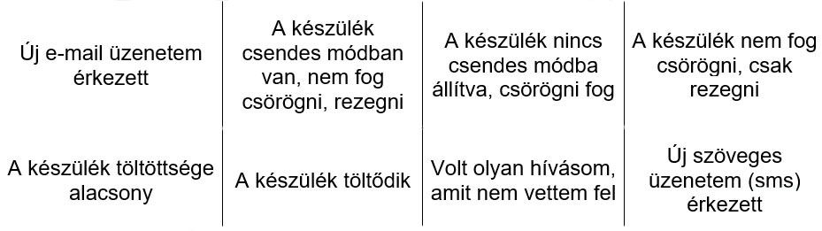
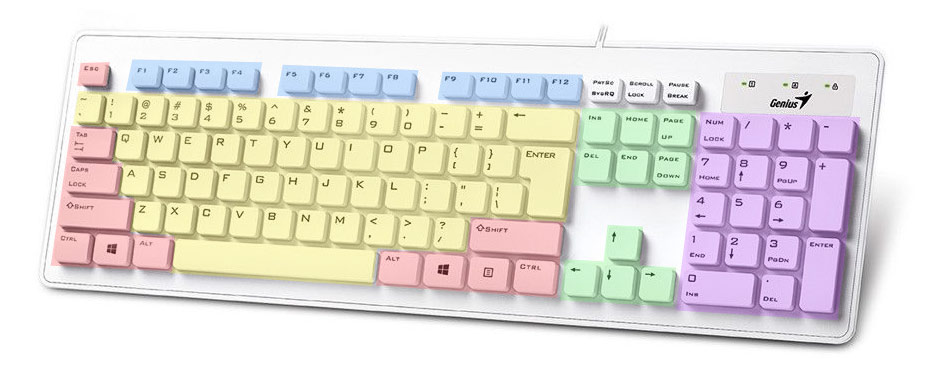
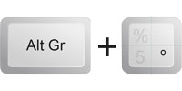
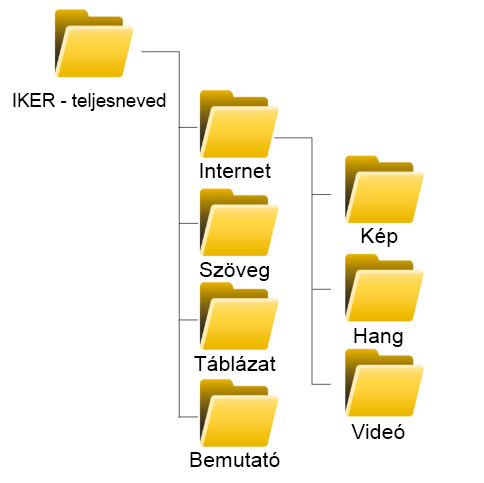

Ez az oldal az iskolánkban induló IKER-1 és IKER-2 képzésekről ad
tájékoztatást.
Az oldal információkat tartalmaz a képzésről,
segítséget nyújt annak elvégzéséhez, amelyet az oldalon lévő
feladatokon keresztül teljesíthetünk.
Az IKER 1 és IKER 2. szintű képzési programok rövid
bemutatása:
A Kormányzati Informatikai Fejlesztési Ügynökség (KIFÜ)
által fejlesztett képzési programok alapvető célja az elsősorban
gazdasági szempontból hátrányos helyzetű társadalmi csoportok
felzárkóztatása, digitális kompetenciáik fejlesztése annak
érdekében, hogy gazdasági versenyképességük növekedjen,
munkaerő-piaci esélyeik javuljanak.
Az
Információ menüpont alatt a képzési programról olvashatsz, a
Tananyag menüpontban az IKER-1 képzés 10 alkalmas tananyagát
olvashatod át, valamint a Feladatok menüpont az 5 nap alatt
végrehajtott, egyénileg összeállított feladatokat tartalmazza.
Válassz
bátran!
IKER 1. szint
Első lépések a digitális világba
Információs oldal
1. A képzési program
Megnevezés: Első lépések a digitális világba - IKER 1. szintű képzés
A képzési program célja:
A képzési program átfogó célja
a digitális kulcskompetencia fejlesztése, a digitális társadalomhoz
való tartozással kapcsolatos igények megalapozása, pozitív attitűd
kialakítása a digitális eszközök irányában.
A program konkrét
céljai:
A résztvevők képesek legyenek használni az
infokommunikációs eszközük (PC, tablet, notebook, okostelefon, stb.)
működtetéséhez szükséges alapvető funkciókat.
Képesek legyenek
hanghívásra és szöveges üzenetküldésre használni infokommunikációs
eszközüket.
Képesek legyenek egyszerű szövegszerkesztési
lépések felhasználásával rövid szöveget szerkeszteni.
Képesek
legyenek egyszerű mentési műveleteket végezni.
Képesek
legyenek az interneten tájékozódni, könnyen hozzáférhető
információkat megszerezni.
Képesek legyenek elektronikus
levelezést bonyolítani az alapvető funkciók használatával.
Képesek legyenek az infokommunikációs eszközeik megismert
funkcióit biztonságosan használni.
A képzési program célcsoportja:
16 év feletti,
alapvető informatikai ismeretek hiányával küzdő személyek
2. A képzés során megszerezhető kompetenciák
- A résztvevők képesek a képzés során használt eszközeik (PC,tablet, notebook, okostelefon, stb.) működtetéséhez szükséges alapvető ismeretek alkalmazására.
- Képesek egyszerű szövegszerkesztési lépések felhasználásával rövid (pl. keresőprogramba beírandó) szöveg szerkesztésére.
- Képesek egyszerű mentési műveletek elvégzésére.
- Képesek tájékozódni, információt gyűjteni az interneten.
- Képesek elektronikus levelezést bonyolítani annak egyszerű funkciói használatával.
- Képesek a képzés során használt eszközeik egyszerű biztonsági lépéseinek használatára.
3. A programban való bekapcsolódás feltételei
- Iskolai végzettség: nem szükséges
- Szakmai végzettség: nem szükséges
- Szakmai gyakorlat: nem szükséges
- Egészségügyi alkalmasság: nem szükséges
- Előzetesen elvárt ismeretek: nincs
- Egyéb feltételek: betöltött 16. életév
4. A programban való részvétel feltételei
- Részvétel követéséenk módja: résztvevők által aláírt napi jelenléti ív a hiányzások nyilvántartására
- Megengedett hiányzás: A megengedett hiányzás a tanórák 10 %-a, ennél nagyobb mértékű hiányzás konzultációval történő pótláson keresztül megengedhető
- Egyéb feltételek: -
5. Tervezett képzési idő
- Elméleti órák száma: 0
- Gyakorlati órák száma: 35
- Összes óraszám: 35
6. A képzés formájánal (egyéni felkészítés, vagy csoportos képzés, vagy távoktatás) meghatározása
- A képzés formája: csoportos képzés
7. A tanegységek
- Barátkozás az infokommunikációs eszközünkkel
- Az első lépések a használatban I.
- Az első lépések a használatban II.
- Az első létrehozott tartalmak
- Böngészés az interneten I.
- Böngészés az interneten II.
- Elektronikus levelezés I.
- Elektronikus levelezés II.
- Hanghívásra alkalmas alkalmazások
- Gyakorlunk, gyakorlunk, gyakorlunk
Tananyag oldal
- 1. óra
- 2. óra
- 3. óra
- 4. óra
- 5. óra
- 6. óra
- 7. óra
- 8. óra
- 9. óra
- 10. óra
1. óra - Barátkozás az infokommunikációs eszközünkkel
Célja:
A képzés során használt infokommunikációs
eszköz alapvető működtetéséhez szükséges funkciók (be és
kikapcsolás, készenléti állapot és annak elhagyása) megismerése,
használata.
A képzés során használt infokommunikációs eszköz
beviteli módjainak (billentyűzet, egér, érintőképernyő)
megismerése.
Elvárt tanulási eredmények:
A foglalkozás során a
résztvevők megismerkednek az oktatóval, a többi résztvevővel, a
tanulási program fő témaköreivel. Képesek annak megfogalmazására,
hogy miért vesznek részt a képzésben, elfogadják a csoport
együttműködési szabályait. Képesek az IKT eszközük be- és
kikapcsolására, készenléti állapotba helyezésére, a készenléti
állapot elhagyására.
1. Bevezetés
A feladat célja az oktató bemutatkozása, a képzési program
bemutatása, továbbá, hogy a résztvevők megkapják és megismerjék a
SÚGÓ füzet szerepét, helyét a tanulási folyamatban.
SÚGÓ füzet fontossága:
A
SÚGÓ-t azért készítették, hogy megkönnyítsék Neked a képzési
programon való részvételt. Tartalmazza a képzési programmal, a
program oktatójával, a csoport tagjaival és nem utolsó sorban a
tananyaggal kapcsolatos információkat. A SÚGÓ-ba lefűzheted a
kapott munkalapokat, emlékeztetőket, feljegyezhet minden Neked
fontos dolgot, ami a képzési programon történik.
Minden
alkalommal hozd magaddal a SÚGÓ-dat!
2. Ismerjük meg egymást!
A feladat célja, hogy a csoport tagjai megismerjék egymást.
Mutatkozzunk be egyásnak!
Mi az, amit fontosnak tartok
magamról, hogy a többiek is tudjanak?
Ha van rá igény, illetve kellő idő, a SÚGÓ füzetbe a
résztvevők beírhatják egymás neveit.
3. Szerződéskötés
A feladat célja a képzés kereteinek közös meghatározása,
elfogadása.
A csoport egyezzen meg a program során
alkalmazandó közös szabályokról. Ezek lehetőleg rövid, közérthető
mondatok legyenek, pl.: késés az óráról, mobiltelefon használata,
névkitűző viselése, hangnem, tegeződés, a másik meghallgatása,
stb.
4. Ezért vagyok itt!
A feladat célja a tanulási motiváció és az IKT eszközökkel
szerzett eddigi tapasztalatok összegyűjtése, az egyéni tanulási
célok megfogalmazása.
1. részfeladat:
Tanulási motiváció és a korábbi tapasztalatok felmérése.
Mondj egy pár szót a tanulási szokásaidról!
Azért szeretek
tanulni, mert... vagy azért nem szeretek tanulni, mert...
Rögzítsd a megállapításaidat a kiosztott
IKER_1.1.4_SÚGÓ
munkalapra.
2. részfeladat:
A második
részfeladat célja, hogy a résztvevők megismerkedjenek az IKER
önértékelő eszközzel, egyben képet kapjanak arról, hogy milyen
digitális kompetenciák tartoznak az 1. szinthez, mik azok ezek
közül, amiket a képzés során meg fognak szerezni. A digitális
világban való boldogulásnak különféle részterületei vannak és
lehetséges, hogy valaki egyes részterületeken egészen magas
szinten áll, míg másokon kevésbé előrehaladott.
IKER önértékelő példákkal
Az önértékelő táblázat öt oszlopa a digitális írástudás öt
részterületét jeleníti meg. Ez egy nemzetközi csoportosítás, az
egyik oszlop például kifejezetten arról szól, hogy biztonságosan
használjuk az eszközünket, míg a másik inkább arról, hogyan tudunk
másokkal kapcsolatot tartani. Ezen a tanfolyamon kifejezetten ezen
a szinten igyekszünk megerősíteni a kompetenciáinkat, de aki
belejön a tanulásba a későbbiekben - az IKER 1. szintű képzés
elvégzését követően - tovább haladhat (IKER 2. képzés -
február).
A képzés során nagyon sok mindennel fogunk
foglalkozni.
Keresd meg a fenti képen, hogy hol találhatók az alábbi
példák:
- meg fogjuk tudni nézni a várható időjárást, vagy a
hétvégi meccs eredményét
- fogunk küldeni néhány soros
e-mailt
- fogjuk használni a billentyűzetet, az egeret, vagy
az érintőképernyőt
- magabiztosan fogjuk működtetni a képzés
során használt eszközünket
- fogunk beszélni a gyanús
tartalmú levelekről is.
Sikerült-e mindet megtalálni, volt-e olyan oszlop, aminek egyik
példáját sem találtad meg?
Találtál-e esetleg a példák
között olyat, ami különösen érdekel téged?
3. részfeladat
A SÚGÓ munkalapodra
röviden írd fel a választ az
"Azt várom ettől a tanfolyamtól, hogy..."
kérdésre.
Fogalmazz meg legalább egy, számodra fontos, konkrét, a
digitális eszközökhöz kapcsolódó célt is!
5. Kezdjük az ismerkedést!
A feladat célja, hogy a résztvevők számára világossá váljanak az
egyes eszközök között lévő hasonlóságok és különbségek a
felhasználás gyakori formái szerint.
Segítségül hívjuk az
IKER_1.1.5_F
segédanyagban található, egyes eszköztípusokról készített
képeket.
Eszközök:

Válaszold meg, hogy mely tulajdonságok mely készülékeket
jellemzi?
- időnként tölteni kell
- nem lehet tölteni, mindig be
kell dugni a konnektorba
- a zsebemben is elfér
- két
kézzel fogva kényelmes tartani
- két kézzel tartani nehéz,
egy asztalra kell helyezni
- nagy mérete miatt egy asztalra
kell helyezni
- kényelmes rajta filmet nézni
-
kényelmes rajta zenét hallgatni utazás közben
- lehet vele
fényképezni
- bárhol fel tudnak hívni rajta
- könnyen
magammal vihetem
- lehet vele internetezni
-
érintőképernyője van
- lehet vele telefonálni
-
kényelmes rajta hosszú szövegeket írni
Fűzd le a kioszott
IKER_1.1.5_SÚGÓ
munkalapot!
6. Alapfunkciók használata
A feladat célja, hogy a résztvevők megismerjék az általuk hozott,
vagy a rendelkezésükre bocsátott eszközök gombjainak funkcióit,
használatát, a beviteli módjait (billentyűzet, egér,
érintőképernyő).
1. részfeladat:
Először
szemrevételed az eszközöket!
Próbáld ki-bekapcsolni, illetve alvó állapotba helyezni az
eszközödet!
Megnézheted hozzá a kiosztott
IKER_1.1.6._SÚGÓ
munkalapodat.
Érdemes megemlíteni, hogy a különböző eszközök
különböző sebességgel kapcsolnak be. A PC-k és laptopok lassan
lesznek használatra készek, míg az okostelefonok és táblagépek
legtöbbször csak 'alszanak', így gyorsan használatba lehet őket
venni. A készenléti / alvó állapot arra jó, hogy az IKT eszköz
ilyenkor kevesebb áramot fogyaszt és - a kikapcsolt állapotban
lévő eszközhöz képest - gyorsabban vissza lehet kapcsolni, ha csak
újra szükség van rá.
Számítógépet használsz? Akkor a
kiosztott
IKER_1.1.6_F
munkalapot kell átnézned!
2. részfeladat:
A
billentyűzet minden eszközön megjelenik, ezért fontos, hogy a
legfontosabb billentyűket megismerd, magabiztosan kezeld. A
következő alkalmakon sokszor fogjuk használni a billentyűzetet és
az egeret / ujjmozdulatokat az érintő képernyőn.
Mondd el, hogy mire valók az alábbi billentyűk?
Enter, szóköz, Shift, törlés, kukac, AltGr, Ctrl, Esc, Caps
Lock, stb.
Ennek támogatására nézd meg az
IKER_1.1.6_SÚGÓ_PC+laptop
és az
IKER_1.1.6_SÚGÓ_okoseszköz
segédleteket.
7. Az egység zárása
A feladat célja az otthoni feladat kiadása, közös értelmezése,
illetve az, hogy a résztvevők lehetőséget és egy kis időt kapjanak
a SÚGÓ füzetbe való jegyzetelésre.
Töltsd ki egyénileg az
IKER_1.1.7_SÚGÓ
segédletedet! Ezen fognak szerepelni a jegyzeteid a mai
alkalomról, valamint, hogy mit tanultál ma, mit viszel haza.
-
Otthoni feladat:
- Keress az általad használt IKT eszközről valamilyen hirdetést, pl. ingyenes hirdetési újságban, stb.!
- Gyűjtsd össze, hogy mit írnak róla: például milyenek a tulajdonságai, mire használható stb.! Akár ki is vághatod a hirdetést, be is ragaszthatod az IKER_1.1.7_SÚGÓ segédletre és be is karikázhatod a jellemzőket.
- Jelöld meg, hogy melyik jellemző ismerős és melyik ismeretlen az számodra!
8. Egyéni igényekhez igazodó kontaktóra
Az egyéni igényekhez igazodó kontaktóra célja az eltérő egyéni
haladású résztvevők segítése egyéni tanulási céljaiknak
elérésében, a lassabban haladó résztvevők számára ismétlésre,
gyakorlásra, felzárkózásra lehetőség biztosítása, az átlagos vagy
gyorsabb haladású résztvevők esetén az elmélyítés, a tanfolyam
anyagán túlmutató nehezebb feladatok egyéni megoldásának
segítése.
Ha korábban nem használtál egeret, akkor a Paint program segítségével gyakorold az egér bal és jobb gombjainak használatát!
2. óra - Az első lépések a használatban I.
Célja:
A digitális eszközökhöz kapcsolódó alapvető
fogalmak (pl. program, alkalmazás, ikon) megismerése és
használata.
A digitális eszközök alapvető funkcióinak önálló
használata.
1. Ráhangolódás
A feladat célja, hogy a résztvevők feldolgozzák az otthoni feladat
megoldását, esetleges nehézségeit.
Egy pár mondatban fogalmazd meg, hogy mikor és hogyan
találkoztál IKT eszközzel!
Találtál-e olyan sajátosságot,
tulajdonságot, amelyet már ismertél és melyek ezek?
Találtál-e
olyan sajátosságot, tulajdonságot, amelyet még nem ismertél és
melyek ezek?
2. Az eszközök alap-funkcióinak használata, gyakorlása.
A feladat célja, hogy a résztvevők megismerjék a képzés során
használt digitális eszközük be és kikapcsolásának, alvó módba
helyezésének lépéseit.
Egy pár mondatban fogalmazd meg, hogy hogyan lehet:
-
bekapcsolni
- alvó módba hozni
- alvó módból
felébreszteni
- kikapcsolni az általad használt IKT
eszközt?
Nyugodtan használd hozzá az előző alkalommal kapott
1.1.6_SÚGÓdat!
3. Az IKT eszközre jellemző alapfogalmak megbeszélése
A feladat célja, hogy a résztvevők megismerjék és megértsék az IKT
eszközökre jellemző alapfogalmakat.
Mi jut eszedbe azokról a szavakról, hogy:
- program
-
alkalmazás
- ikon
- futtatás/elindítás
-
program bezárása
Mit takarhatnak ezek a fogalmak?
-
hardver
- szoftver
- operációs rendszer
Miért
jó, hogy vannak ikonok?
Szemléltetésként nézzük meg az
IKER_1.2.3_F
munkalapot!
4. Szoftverek keresése, megnyitása, bezárása az IKT eszközön
A feladat célja, hogy a résztvevők magabiztossá váljanak a
különböző alkalmazások megnyitásában, bezárásban, ikonjuk, nevük
alapján azokat megtalálják.
1. részfeladat:
Keresd meg az alábbi alkalmazásokat a
laptopodon/számítógépeden:
Lomtár, számítógép, Internet Explorer, Hangrögzítő,
Jegyzettömb, Paint, WordPad, Távoli asztal kapcsolat, Windows
intéző, Opera böngésző, Google Chrome, Firefox, Safari
böngésző.
Amennyiben tableted/okostelefonod van, keresd meg a
következőket:
óra, üzenetek, naptár, beállítások, böngésző,
fényképezőgép, kamera, galéria, fényképek, témák, videók,
időjárás, riasztások, áruház, e-mail, FM rádió, Skype, számológép,
térképek, fotók, telefon, tárcsázó, jegyzet, hangrögzítő.
2. részfeladat:
Gondold végig, hogy könnyű volt-e megtalálni az
alkalmazásokat?
Segítettek-e az ikonok a szoftver
megtalálásában?
Mi tetszik az eszköz kezelésében?
5. A szoftverek felhasználási lehetőségei
A feladat célja, hogy a résztvevők megismerjék az előző feladatban
is megnyitott alkalmazások alapvető felhasználási lehetőségeit,
illetve összekössék az alkalmazások neveit azok ikonjaival.
Válaszolj pár mondatban, hogy mire tudnád használni ezeket a
szoftvereket a mindennapokban?
Fűzd le a kiosztott
IKER_1.2.5_SÚGÓ_PC+laptop
munkalapot, ha PC-t vagy laptopot használsz!
Fűzd le a
kiosztott
IKER_1.2.5_SÚGÓ_okoseszköz
munkalapot, ha táblagépet vagy okostelefont használsz!
6. Az egység zárása
A feladat célja az otthoni feladat kiadása, közös értelmezése,
illetve az, hogy a résztvevők lehetőséget és egy kis időt kapjanak
a SÚGÓ füzetbe való jegyzetelésre.
Töltsd ki egyénileg az
IKER_1.2.6_SÚGÓ
segédletet, egészítsd ki ennek a munkalapnak a jegyzeteit és fűzd
le! Valamint erre a munkalapra rögzítsd az otthoni feladat
válaszait is!
-
Otthoni feladat:
- Kérdezd meg családtagodat, barátodat, ismerősödet, hogy az IKT eszközén milyen programokat, alkalmazásokat szokott használni?
- Mit ábrázol és hogyan néz ki azok ikonja?
- Mire használja őket?
3. óra - Az első lépések a használatban II.
Célja:
Az IKT eszközök alapvető visszajelző
funkcióinak megismerése.
Az IKT eszközök alapvető funkcióinak
megismerése, önálló használata.
Az infokommunikációs eszközök
használatával kapcsolatos pozitív attitűd fejlesztése, nyitottság
a tudásuk további bővítésére.
Egyszerű, a matematikai
alapműveletek gyakorlását is segítő alkalmazások megismerése,
használatuk elsajátítása.
Azoknak a módoknak és a közöttük
lévő különbségeknek a megismerése és értelmezése, melyekkel az IKT
eszközök az internetre csatlakoztathatóak.
1. Ráhangolódás
A feladat célja, hogy a résztvevők feldolgozzák az otthoni feladat
megoldását, esetleges nehézségeit.
Egy pár mondatban fogalmazd meg, hogy miben fejlődtél?
Milyen
alkalmazások kerültek lejegyzetelésre?
2. Szoftverek megnyitása
A feladat célja az előző alkalommal elsajátított, az alkalmazások
megnyitásának és bezárásának felelevenítése.
Keresd meg az alábbi alkalmazásokat a
laptopodon/számítógépeden, nyisd meg és zárd be őket!
Lomtár, számítógép, Internet Explorer, Hangrögzítő,
Jegyzettömb, Paint, WordPad, Távoli asztal kapcsolat, Windows
intéző, Opera böngésző, Google Chrome, Firefox, Safari
böngésző.
Amennyiben tableted/okostelefonod van, keresd meg a
következőket, nyisd meg és zárd be őket!
óra, üzenetek, naptár, beállítások, böngésző,
fényképezőgép, kamera, galéria, fényképek, témák, videók,
időjárás, riasztások, áruház, e-mail, FM rádió, Skype, számológép,
térképek, fotók, telefon, tárcsázó, jegyzet, hangrögzítő.
Beszélj ezek ikonjairól is!
3. Életszerű feladatok az eszközök használatával
A feladat célja, hogy a résztvevők életszerű helyzetben kezdjenek
el használni egy nagyon egyszerű alkalmazást, amihez jó kiindulás
a számológép.
Hogyan szoktál kiszámolni dolgokat a mindennapi életben?
Például
hogy számolod ki, hogy mennyibe kerülne egy közös családi
kirándulás egy közeli állatkertbe?
Ehhez nyúj segítséget a kiosztott
IKER_1.3.3_F
munkalap kártyái.
Keresd meg és nyisd meg az IKT eszközödön a számológép
szoftvert és számold össze a segítségével, mennyibe kerülne
összesen a közös családi kirándulásod!
4. Mit jelez, hol jelez?
A feladat célja, hogy a résztvevőkben tudatosodjon, hogy az IKT
eszközeik jelzéseket adnak, amikre figyelniük kell.
A saját, vagy megismerni kívánt infokommunikációs eszközödön
milyen jelzésekkel, esetleg hibaüzenetekkel találkoztál
eddig?
Hol jelentek meg ezek?
Hogy/honnan jöttél rá,
mit szeretne velük tudatni az eszközöd?
Ehhez segítséget nyújt az
IKER_1.3.4_F
segédlet képei.
Kiegészítésként elmondható, hogy vannak az eszközöknek olyan jelzései, amik megjelennek és nem hagynak továbblépni addig, amíg nem kezdünk velük valamit. Más jelzések viszont csak megjelennek és nekünk kell észrevenni, értelmezni, mit jelenthetnek.
5. Az eszköz jelzéseinek megismerése
A feladat célja, hogy rögzüljenek a résztvevőkben az eszközök
egyes jelzései, ezek jelentései.
Párosítsd össze az okostelefonod jelzésit a megfelelő
jelentésekkel!
Okoseszköz esetén az
IKER_1.3.5_SÚGÓ_okoseszköz
munkalap képei segítenek.

Párosítsd össze a számítógéped jelzéseit a megfelelő
jelentésekkel!
PC-s és laptopot esetén az
IKER_1.3.5_SÚGÓ_PC+laptop
munkalap képei segítenek.
6. Csatlakozás az internethez
A feladat célja, hogy a résztvevők megismerkedjenek az eszközök
internetre való kapcsolódásának különböző módjaival,
lehetőségével.
Mondd el, hogy van-e olyan eszközöd otthon, ami csatlakozik az
internethez?
Tudod-e, hogyan csatlakozik az internethez?
Tudsz-e
más módot, ahogy lehet csatlakozni az internethez?
7. Az egység zárása
A feladat célja az otthoni feladat kiadása, közös értelmezése,
illetve az, hogy a résztvevők lehetőséget és egy kis időt kapjanak
a SÚGÓ füzetbe való jegyzetelésre.
Töltsd ki egyénileg az
IKER_1.3.7_SÚGÓ
segédletet, egészítsd ki ennek a munkalapnak a jegyzeteit és fűzd
le! Valamint erre a munkalapra rögzítsd az otthoni feladat
válaszait is!
-
Otthoni feladat:
- Kérdezd meg családtagodat, barátodat, ismerősödet, hogy szokott-e internethet csatlakozni?
- Ha igen, hogyan csatlakoznak az internethez?
- Miért szoktak felmenni az internetre?
8. Egyéni igényekhez igazodó kontaktóra
Az egyéni igényekhez igazodó kontaktóra célja az eltérő egyéni
haladású résztvevők segítése egyéni tanulási céljaiknak
elérésében, a lassabban haladó résztvevők számára ismétlésre,
gyakorlásra, felzárkózásra lehetőség biztosítása, az átlagos vagy
gyorsabb haladású résztvevők esetén az elmélyítés, a tanfolyam
anyagán túlmutató nehezebb feladatok egyéni megoldásának
segítése.
További párosítások láthatóak az alábbi
segédleteken:
Okoseszköz esetén az
IKER_1.3.8_F_okoseszköz
munkalap képei segítenek.
PC-s és laptopot esetén az
IKER_1.3.8_F_PC+laptop
munkalap képei segítenek.
4. óra - Az első létrehozott tartalmak
Célja:
Egyszerű tartalmak létrehozására alkalmas
programok megismerése, használata.
A biztonságos tárolás,
adatkezelés elemi szabályainak megismerése, használata.
Egyszerű
digitális tartalmak létrehozása, azok mentése, előhívása.
1. Ráhangolódás
A feladat célja, hogy a résztvevők feldolgozzák az otthoni feladat
megoldását, esetleges nehézségeit.
Az elmúlt alkalom óta mikor és hogyan találkoztál IKT
eszközzel?
Volt-e olyan személy az ismeretségi körödben,
akinek nincs olyan eszköze, amivel az internethez lehet
csatlakozni?
Melyik megoldást tartod számodra legjobbnak:
vezetékes csatakozás, vezeték nélkül csatlakozás (wifi), mobil
internettel való csatlakozás?
2. A keresett alkalmazások megmutatása, ikonok felismerése
A feladat célja, hogy a résztvevők átismételjék és gyakorolják az
alkalmazások megkeresését, megnyitását és bezárását.
Mutasd meg, hogy a legutóbbi alkalommal melyik alkalmazásokat
kerested meg az eszközödön, mi az ikonja, hogyan kell azt
elindítani és bezárni!
Bátran használd hozzá a SÚGÓdat!
3. Hangfelvételt készítő alkalmazás használata
A feladat célja, hogy a résztvevők életszerű helyzetben kezdjenek
el használni egy olyan rendkívül egyszerű, kevés lépést igénylő
alkalmazást, mellyel saját tartalom hozható létre. Ilyen a minden
eszköztípuson elérhető hangfelvétel készítő alkalmazás.
Hogyan készíthetsz hangfelvételt, hogyan lehet ezeket
elmenteni, visszahallgatni, törölni?
Segítségül hívhatod ehhez a kiosztott
IKER_1.4.3_SÚGÓ_PC+laptop
és az
IKER_1.4.3_SÚGÓ_okoseszköz
segédleteket.
Érdemes megemlíteni, hogy az okoseszközök
hangrögzítés alkalmazásainak többsége nem igényel külön mentést,
az eszköz ezt automatikusan elvégzi. Azt is fontos, hogy a törlés
ezeken az eszközökön végleges, az állomány nem állítható vissza
(nincs lomtár).
4. Egyszerű szöveg létrehozása, mentése, előhívása, törlése
A feladat célja, hogy a résztvevők a hangfelvételek készítése után
egyszerű szöveges tartalmakat is hozzanak létre, azokat mentsék,
töröljék.
Hogyan szoktad megjegyezni a tennivalóidat?
Ha hallasz egy
jó receptet, akkor hogyan jegyzed meg?
Ha bevásárló listát
kell készítened, azt hogyan jegyzed fel?
A kérdések lényege, hogy átgondoljad, hogy amikor adatok,
információk írásbeli rögzítésére van szükség a mindennapjaidban,
akkor azt hogyan szoktad megtenni.
Indítsd el a Jegyzettömb nevű alkalmazást a számítógépen és írj
bele pár sort, pl. a következő találkozások időpontjait!
Mentsd
el ezt a szöveges állományt, majd próbáld újra megnyitni!
5. Kapcsolódó kérdések tisztázása
A gyakorlat első részének célja, hogy az oktató egy önértékelő
részt biztosítson a résztvevőknek (mely területet mennyire
találták nehéznek, melyeknél érzik úgy, hogy több gyakorlásra van
szükségük). A gyakorlat második részének célja, hogy az oktató
aktív részvételével a résztvevők összegezzék a tapasztalataikat,
ennek során visszajelzést is kap az oktató az esetleges
nehézségekről.
Melyik feladat volt a könnyebb, melyik volt nehezebb?
Mire
tudnád használni ezeket az alkalmazásokat a mindennapokban?
Mikor
kell engedélyt kérnem attól, akinek a hangját felveszem?
6. Az egység zárása
A feladat célja az otthoni feladat kiadása, közös értelmezése,
illetve az, hogy a résztvevők lehetőséget és egy kis időt kapjanak
a SÚGÓ füzetbe való jegyzetelésre.
Töltsd ki egyénileg az
IKER_1.4.6_SÚGÓ
segédletet, egészítsd ki ennek a munkalapnak a jegyzeteit és fűzd
le! Valamint erre a munkalapra rögzítsd az otthoni feladat
válaszait is!
-
Otthoni feladat:
- Készíts hangfelvételt! A felvételeket mentsd el és nevezd el a tartalma szerint!
- Jegyzetelő alkalmazás segítségével készíts rövid bevásárló listát vagy teendő listát! Mentsd el olyan névvel, ami a tartalomra utal!
5. óra - Böngészés az interneten I.
Célja:
Az IKT eszköz egy előre telepített internet
böngészőjének megismerése és használata.
Az internet böngésző
alapvető funkcióit használva weboldalakon könnyen hozzáférhető
információk gyűjtése.
Egyszerű keresőszavak használatával
keresés indítása.
A keresések egyértelmű eredményei közül a
megfelelő kiválasztása.
1. Ráhangolódás
A feladat célja, hogy a résztvevők feldolgozzák az otthoni feladat
megoldását, esetleges nehézségeit.
Halgassuk meg az otthon készített hangfelvételeidet!
Ismertesd,
hogy milyen jegyzetőlő alkalmazással milyen bevásárló listát
készítettél!
2. Mire jó az internet, mire jó a böngésző?
A feladat célja, hogy a résztvevők megbeszéljék a böngésző
programokkal szerzett korábbi tapasztalataikat, az ikonok
azonosítása alapján képesek legyenek elindítani a böngésző lapot,
megismerjék annak alapvető funkcióit.
1. részfeladat:
Beszéljük át pár mondatban az alábbi kérdéseket!
Pár mondatban fogalmazd meg, hogy mire jó az internet?
Milyen
veszélyei vannak?
Mire jó a böngésző?
Mik a weboldal
címek?
A böngészők vizsgálatakor szembeötlőek azok különbségei
mind kinézetben mind funkciójukban.
2. részfeladat:
A kiosztott
IKER_1.5.2_SÚGÓ_PC+laptop
és
IKER_1.5.2_SÚGÓ_okoseszköz
munkalapok alapján azonosítsd be a böngészőprogramokat és
indítsd el azokat!
3. Hogy jutok el egy honlapra és mit találok ott?
A feladat célja, hogy a résztvevők begyakorolják az eszközük
böngészőjének elindítását, bezárását, honlapok megnyitását azok
címeinek begépelésével.
Írj be pár népszerű internetcímet a böngészőprogram
címsorába
(pl. origo.hu, idokep.hu, port.hu, stb.)
és látogasd meg azokat egyesével!
4. Keresés az interneten
A feladat célja, hogy a résztvevők megismerkedjenek az interneten
egyszerű keresőszavak mentén történő kereséssel.
A kereséshez
keresőket használunk, ezek közül a legnépszerűbbek a Google, a
Yahoo és a Bing. A keresést meg tudjuk kezdeni ezeknek a
honlapjáról, de akár közvetlenül a keresőszavaknak a böngésző
címsorába való begépelésével is elindulhatunk. Ha a keresőszavakat
nem jól választjuk meg, lehet, hogy nem találjuk meg, amit
keresünk.
Próbáld meg megtalálni a választ interneten az alábbi
kérdésekre:
- Mi lesz ma este a műsor az M1 csatornán?
- Mi a
kókuszgolyó receptje?
- Milyen időjárás lesz holnap?
-
Mi a prósza?
- Mi Bolívia fővárosa?
További kérdésekben
segítenek az
IKER_1.5.4_F
munkalap kérdései is.
5. Tapasztalatok megosztása
A feladat célja, hogy az oktató aktív részvételével a résztvevők
összegezzék a tapasztalataikat, ennek során visszajelzést is kap
az oktató az esetleges nehézségekről.
Volt-e olyan információ, amit nem vagy csak nehezen csikerült
megtalálni?
Mi segített abban, hogy az információkat
megtaláljad?
Mire fogod tudni használni a böngészőt a
mindennapokban?
6. Az egység zárása
A feladat célja az otthoni feladat kiadása, közös értelmezése,
illetve az, hogy a résztvevők lehetőséget és egy kis időt kapjanak
a SÚGÓ füzetbe való jegyzetelésre.
Töltsd ki egyénileg az
IKER_1.5.6_SÚGÓ
segédletet, egészítsd ki ennek a munkalapnak a jegyzeteit és fűzd
le! Valamint erre a munkalapra rögzítsd az otthoni feladat
válaszait is!
-
Otthoni feladat:
- A www.mindmegette.hu oldalon keresd meg a kedvenc ételed receptjét!
- Győződj meg róla, te is így készíted-e, így szereted-e ezt az ételt!
7. Egyéni igényekhez igazodó kontaktóra
Az egyéni igényekhez igazodó kontaktóra célja az eltérő egyéni
haladású résztvevők segítése egyéni tanulási céljaiknak
elérésében, a lassabban haladó résztvevők számára ismétlésre,
gyakorlásra, felzárkózásra lehetőség biztosítása, az átlagos vagy
gyorsabb haladású résztvevők esetén az elmélyítés, a tanfolyam
anyagán túlmutató nehezebb feladatok egyéni megoldásának
segítése.
További alkalmazások kipróbálásában segítenek
az
IKER_1.5.7_F_PC+laptop
és
IKER_1.5.7_F_okoseszköz
munkalapok.
6. óra - Böngészés az interneten II.
Célja:
A böngészők használatának megerősítése, önálló
tanulás lehetőségeinek biztosítása, a weboldalakon elérhető
információk keresése, felhasználása, értékelése.
1. Ráhangolódás
A feladat célja, hogy a résztvevők amellett, hogy feldolgozzák az
otthoni feladat megoldását, esetleges nehézségeit, összegezzék a
képzés során szerzett eddigi tapasztalataikat.
Az eddig tanultakbl mi volt számodra a leghasznosabb?
Volt-e
olyan feladat, amely a képzés előtt nagy nehézséget okozott, de
azóta más könnyen megy?
Otthoni feladat kapcsán:
Megtaláltad-e a kedvenc ételed recepjét?
2. Választás a keresési találatok közül
A feladat célja, hogy a résztvevők elmélyítsék a böngészés és
kereséssel kapcsolatban tanultakat, magabiztosabbá, tudatosabbá
váljon a keresési találatok közül a választás.
Találd meg a választ interneten az alábbi kérdésekre:
- Meddig van nyitva ma a legközelebbi TESCO?
- Mi a
településeden található orvosi rendelő telefonszáma?
-
Mennyibe kerül egy diákbérlet Budapesten?
- Hol vannak
szakképzési centrumok?
- Mikor élt Mátyás király?
A
keresés eredményei között lehetnek olyan találatok, amik célzottan
egy szolgáltatáshoz visznek bennünket. Lehetnek fizetett
hirdetések is, amik nem feltétlenül a legjobb találatok, de
lehetnek képek is, ezt a keresőben be is állíthatjuk.
Ehhez
nyújt kis áttekintést az
IKER_1.6.2_SÚGÓ
segédlete.
3. Keresés weboldalak keresőivel
A feladat célja, hogy a résztvevők megismerjék a weboldalak
beépített keresőinek használatát, megértsék a böngészőben és a
honlapon történő keresés közötti különbségeket.
1. részfeladat:
Az előző feladatban kölünböző, még ismeretlen honlapok
között kellett választani. Lehet azonban olyan kérdésünk, amiről
már eleve tudjuk, hogy melyik honlapon fogunk, vagy szeretnénk
választ találni. Ilyenkor megspórolhatjuk azt az időt, amit a
böngészőben való kereséssel töltenénk és rögtön azt a honlapot
nyitjuk meg és használjuk annak beépített keresőjét.
- Hogy készül a búbos karaj?alábbi kérdésekre a választ
mely alábbi weboldalakon találod meg a válaszokat?
- Hogy készül a búbos karaj?
- Hol tudok akciós
belépőjegy szolgáltatást vásárolni?
- Hol tudok venni
horgászbotot?
- Milyen hozzávalók kellenek a
palacsintatésztához?
- Hol tudom megvenni a kávékiöntőt?
-
Hol tudok masszázsszoláltatást vásárolni?
www.aprosef.hu
www.arukereso.hu
www.bonuszbrigad.hu
www.jofogas.hu
További
példákat mutat nekünk az
IKER_1.6.3_F
munkalap.
2. részfeladat:
Mondd el a tapasztalatidat a fenti honlapokkal kapcsolatban!
Könnyen
megtaláltad a keresett kifejezést?
4. Mire figyeljünk a böngészés során?
A feladat célja, hogy a résztvevők tudatosabban böngésszenek az
interneten, felmérve azt, hogy mikre kell figyelemmel lenniük.
A kiosztott
IKER_1.6.4_SÚGÓ
segédletet használva gyűjtsd össze, hogyha el kellene magyarázni
az ismerősödnek, hogy mire figyeljenek oda a böngészés során,
mire hívnád fel a figyelmét?
Általánosan megállapítható, hogy figyelnünk kell arra, hogy
az információk ne legyenek elavultak. Az olvasottakat mindig
fentartásokkal kezeljük, legyen bennünk egy egészséges
bizalmatlanság az olvasottakkal szemben. Csak megbízható helyről
vásároljunk, figyeljünk oda, hogy ne utaljunk előre, győződjünk
meg róla, hogy az eladó birtokában van az árunak.
5. Tájékozódás a honlapok menüjében
A feladat célja, hogy a résztvevők megtaláljanak a weboldalakon
olyan információkat is, melyek az oldal különböző részein
található menükből érhetőek el.
Különböző honlapokon az
információk nem mindig közvetlenül a kezdőlapon érhetőek el.
Gyakran előfordul, hogy a honlap kevésbé szem előtt lévő részein,
vagy menüiben kell keresgélni, nem beszélve a reklámokról és
arról, hogy sokszor az oldalsávon, fej- és lábrészre is
kerülhetnek menüpontok.
A kiosztott
IKER_1.6.5_F
munkalap alapján válassz egy megkereshető információt és keresd
meg!
6. Az egység zárása
A feladat célja az otthoni feladat kiadása, közös értelmezése,
illetve az, hogy a résztvevők lehetőséget és egy kis időt kapjanak
a SÚGÓ füzetbe való jegyzetelésre.
Töltsd ki egyénileg az
IKER_1.6.6_SÚGÓ
segédletet, egészítsd ki ennek a munkalapnak a jegyzeteit és fűzd
le! Valamint erre a munkalapra rögzítsd az otthoni feladat
válaszait is!
-
Otthoni feladat:
- Gyűjtsd össze, hogy barátod, ismerősöd mely weboldalakat és miért szokta meglátogatni!
7. óra - Elektronikus levelezés I.
Célja:
E-mail cím létrehozása a biztonságos jelszavak
és megfelelő felhasználói nevek megválasztásával.
Elektronikus
levelezés egyszerű funkcióinak használata.
Az elektronikus
kommunikáció legalapvetőbb szabályainak megismerése és betartása
(Netikett).
1. Ráhangolódás
A feladat célja, hogy a résztvevők feldolgozzák az otthoni feladat
megoldását, esetleges nehézségeit.
Mondd el a tapasztalataidat a barátoktól, ismerősöktől
összegyűjtött weboldalakról!
Bontsd témakörökre a
weboldalakat!
2. A keresés gyakorlása
A feladat célja, hogy a résztvevők gyakorolják a keresők
használatát, magabiztosabbá váljanak ezeknek a feladatoknak a
megoldásában.
Találd meg a választ interneten az alábbi kérdésekre:
- Mikor indul busz a településedről a legközelebbi
megyeszékhelyre?
- Keresd meg a Nyíregyházi állatkert
oldalán, mennyibe kerülnek a jegyek.
- Keress olyan
weboldalt, ami szavakat angolról magyarra fordít!
- Keress
olyan weboldalt, ahol eladó autókat hirdetnek!
- Keress
londoni olimpiával kapcsolatos honlapokat!
- Keresd meg, hogy
a dijnet.hu weboldalán, milyen szolgáltatásokat vehet igénybe!
A
kiosztott
IKER_1.7.6_SÚGÓ
segédletre jegyezd fel a számodra érdekes
találatokat/weboldalakat!
3. Biztonságos jelszavak, elektronikus levelezés
A feladat célja, hogy a résztvevők az e-mail cím elkészítésekor
képesek legyenek megfelelő felhasználói nevet és biztonságos
jelszót választani a jelszóbiztonsággal kapcsolatos alapvető
ismeretek birtokában.
1. részfeladat:
Mit gondolsz mi az elektronikus levél?
Mire jó nekem, ha
van e-mail címem?
Bárki megnézheti a leveleimet?
Hol
vannak a leveleim, hol tudjuk megnézni azokat?
2. részfeladat:
Gondold végig az alábbi
kérdéseket:
Kinek lehet küldeni e-mailt és ki küldhet nekünk?
Milyen
egy jó e-mail cím?
Milyen a jó jelszó, hogy tudjuk
megjegyezni?
Támogatásul használd az
IKER_1.7.3_F
munkalapot!
3. részfeladat:
Nagyon könnyen
kitalálhaunk jelszavakat, de nem biztos, hogy biztonságos lesz.
Hogyan módosítanád a meglévő jelszavadat, hogy biztonságossá
tedd?
Milyen 'trükköket' lehetne bevetni egy biztonságos
jelszó létrehozásához?
4. E-mail cím készítése
A feladat célja, hogy a résztvevők elkészítsék e-mail címüket.
Hozzunk
létre neked egy e-mail címet! A későbbi feladatok könnyebb
megoldása érdekében a Google szolgáltatását célszerű igénybe
venni.
5. E-mail fogadása, küldése és a Netikett alapvető szabályai
A feladat célja, hogy a résztvevők megismerkedjenek a
levelezőrendszerük felületével, képessé váljanak a leveleik
elolvasására, megválaszolására, új levelek elküldésére.
1. részfeladat:
Küldj nekem egy e-mailt, amelyben megírod az e-mail
címedet!
A levél szövegezésénél tartsuk szem előtt, hogy a hivatalos
elektronikus levelezés sem különbözik a kézzel írt levelektől
abban, hogy szükséges a címzettet megszólítani, a levelet lezárni
és aláírásunkkal ellátni. Azoban az ismerősöknek, legközelebbi
barátainknak, családtagjainknak nem fontos ilyen szigorú
struktúrában küldenünk a leveleinket.
2. részfeladat:
Ebben a feladatban válaszlevelet küldök a te leveledre.
Fontos, hogy felismerd egyfelől azt, hogy új e-mailed érkezett,
másfelől, hogy ki a levél feladója.
Miután megkaptad az üzenetemet, küldj néhány szavas
válaszlevelet, amelyben megköszönöd az e-mailt!
Emlékeztetőként töltsd ki az
IKER_1.7.6_SÚGÓ
munkalap megfelelő részeit (Elektronikus levelezés)!
6. Az egység zárása
A feladat célja az otthoni feladat kiadása, közös értelmezése,
illetve az, hogy a résztvevők lehetőséget és egy kis időt kapjanak
a SÚGÓ füzetbe való jegyzetelésre.
Töltsd ki egyénileg az
IKER_1.7.6_SÚGÓ
segédletet, egészítsd ki ennek a munkalapnak a jegyzeteit és fűzd
le! Valamint erre a munkalapra rögzítsd az otthoni feladat
válaszait is!
-
Otthoni feladat:
- A következő alkalomig gyűjtsd össze barátaid, ismerőseid, munkatársaid e-mail címét és add meg nekik az tiéd.
7. Egyéni igényekhez igazodó kontaktóra
Az egyéni igényekhez igazodó kontaktóra célja az eltérő egyéni
haladású résztvevők segítése egyéni tanulási céljaiknak
elérésében, a lassabban haladó résztvevők számára ismétlésre,
gyakorlásra, felzárkózásra lehetőség biztosítása, az átlagos vagy
gyorsabb haladású résztvevők esetén az elmélyítés, a tanfolyam
anyagán túlmutató nehezebb feladatok egyéni megoldásának
segítése.
Gondolkodj el azon, hogy milyen weboldalak esetében szükséges
mindenképpen biztonságos jelszavakat választani!
Milyen
megoldásokkal tudjuk biztosítani, hogy ne ugyanazt a biztonságos
jelszót használjuk minden felületen?
8. óra - Elektronikus levelezés II.
Célja:
Elektronikus levelezés bővített, de egyszerű
funkcióinak használata.
Elérhetőségek kezelése az IKT
eszközön.
1. Ráhangolódás
A feladat célja, hogy a résztvevők feldolgozzák az otthoni
feladatot.
Röviden számolj be róla, hogy hány e-mail címet sikerült
összegyűjtened?
Ezeket az e-mail címeket használni is fogjuk a
későbbiekben.
2. A levelezés használatának gyakorlása
A feladat célja az e-mail küldése és a válasz funkció gyakorlása,
a továbbítás funkció megismerése. A résztvevők képessé válnak az
e-mail mezőinek helyes kitöltésére, a szituációnak megfelelő
tartalmú levelek megfogalmazására a netikett alapvető szabályai
szerint. Megkülönböztetik az olvasott és olvasatlan e-maileket,
tisztában vannak az e-mailek további felhasználásának
lehetőségével.
1. részfeladat:
Nyisd meg a böngészőprogramodban a levelezésedet!
Hivatalos
levelet imitálva (helyes megszólítás, elköszönés) küldj egy
e-mailt a csoport többi tagjának úgy, hogy mindenki küldjön és
kapjon levelet!
Jelezd benne, hogy szeretnél tőlük egy
terméket vásárolni!
Ha kaptál levelet, akkor összegezd a tapasztalataidat,
hogy:
- Honnan láttad, hogy új e-mail érkezett?
- Hogyan
tudod elolvasni a levelet?
- Milyen gyorsan érkezett meg a
levelünk?
- Mit írunk a tárgy mezőbe?
- Milyen
megszólítást használunk?
- Hogyan köszönünk el?
2. részfeladat:
Hivatalos levél formájában válaszolj a beérkezett levelekre és
valamilyen képtelen kitalált okra hivatkozva írd meg, hogy a
kért terméket nem tudod elküldeni.
Miben más ilyenkor az e-mail ahhoz képest, mint amikor mi
kezdünk el levelet írni?
Ha nem látszik az az üzenet, amire
válaszolni szeretnénk, hogy lehet ezt előcsalni?
Hol látom,
hogy ami levél érkezett, az válaszlevél?
Hol látom, hogy én a
levelemet mikor küldtem el?
Mi látható még rólam a
levélből?
3. részfeladat
Továbbítsd a leveledet nekem!
Tegyél egy olyan próbát is,
hogy az e-mail címemet direkt helytelenül írod be, és kapj egy
értesítést erről!
Nyisd meg a hibaüzenetet!
Gondolkozz el az alábbi kérdéseken:
- Tudjuk-e
befolyásolni, hogy a levelünket a másik fél hogyan használja
fel?
- Mire kell figyelnünk, amikor levelet írunk valakinek,
akiben nem bízunk meg teljes mértékben?
- Honnan tudjuk, hogy
a levelünk nem ért célba?
- Honnan tudjuk, hogy mi volt a
hiba?
3. Az elektronikus levelezés haszna
A feladat célja, hogy a résztvevőkben pozitív attitűd alakuljon ki
az elektronikus levelezés felhasználhatóságával kapcsolatban,
annak helyét meglássák a mindennapi kapcsolattartás formái
között.
Miért írnál e-mailt egy barátodnak, mit beszélnél meg vele
e-mailben?
Kérdezték-e tőled korábban valamilyen
szolgáltatónál (például vízmű), hogy mi az e-mail címed?
Milyen
tartalmú e-mailt akarhat nekünk a szolgáltató küldeni?
Valamint hol látható, hogy nem csak én kaptam levelet,
hanem mások is vannak a címzettek között?
Mennyire kell
gondot fordítani a személyes adatok körültekintő kezelésére (pl.
születési idő, hely bankszámlaszám, PIN kód, vallás stb.)
levelezéskor?
Hogyan figyeljünk a reklám levelekre, spamekre,
internetes csalásokra (pl. nigériai csalás), amikor jellemzően
ismeretlen az eredeti feladó, hozzánk is csak továbbítva érkezik?
4. A linkek, beágyazott üzenetküldés, e-mail küldés-fogadás
A feladat célja, hogy a résztvevők célzottan tudjanak honlapokon
elérhetőségeket keresni, értsék az e-mail és a beépített
üzenetküldő szolgáltatások közötti hasonlóságokat és
különbségeket.
Keresd fel a településed honlapját és nézd meg, hogy milyen
e-mail címen lehet kapcsolatba lépni a saját településed
önkormányzatával!
Amennyiben csak beágyazott üzenetküldő
szolgáltatás érhető el, akkor annyit írj vissza, hogy „az
oldalon”.
5. Névjegyek
A feladat célja, hogy a résztvevők képesek legyenek a
kapcsolataikat az eszközük, vagy az e-mail szolgáltatójuk
névjegyzékében elmenteni, szerkeszteni.
Hogyan szoktad megjegyezni mások telefonszámát, címét, vagy más
elérhetőségeit? Használtad-e erre a célra esetleg a
számítógépedet, okoseszközödet?
Nézzük végig a címtár és telefonkönyv funkciókat, milyen
adatokat tudunk rögzíteni. Segítségül hívhatjuk a kiosztott
IKER_1.8.5_SÚGÓ_PC+laptop
és
IKER_1.8.5_SÚGÓ_okoseszköz
segédleteket.
Rögzítsd új névjegyként azokat az ismerőseidet, akiknek az
e-mail címét megkaptad és az otthoni munka során az
IKER_1.7.6_SÚGÓ
munkalapon rögzítetted!
Ha okoseszközt használsz és a telefonszámuk már benne van,
akkor a létező névjegyet módosítsad! További gyakorlásként
rögzítheted az e-mail címemet és más résztvevők elérhetőségeit is!
6. Az egység zárása
A feladat célja az otthoni feladat kiadása, közös értelmezése,
illetve az, hogy a résztvevők lehetőséget és egy kis időt kapjanak
a SÚGÓ füzetbe való jegyzetelésre.
Töltsd ki egyénileg az
IKER_1.8.6_SÚGÓ
segédletet, egészítsd ki ennek a munkalapnak a jegyzeteit és fűzd
le! Valamint erre a munkalapra rögzítsd az otthoni feladat
válaszait is!
-
Otthoni feladat:
- Hamarosan egy e-mailt fogsz tőlem kapni, amelyben valamilyen információt fogok kérni tőled. A feladatod megkeresni az interneten a kért információt és átküldeni azt nekem a következő alkalomig.
9. óra - Hanghívásra alkalmas alkalmazások
Célja:
Az infokommunikációs eszközök felhasználása
verbális kommunikációra.
1. Ráhangolódás
A feladat célja, hogy a résztvevők feldolgozzák az otthoni feladat
megoldását, esetleges nehézségeit.
Okozott-e problémát az általam küldött információ kérése?
2. Válasz mindenkinek és másolat küldése funkciók
A feladat célja, hogy a résztvevők megismerjék az e-mail több
címzettnek való küldésének lehetőségét, gyakorolják ennek
használatát a Netikett alapvető szabályainak
figyelembevételével.
1. részfeladat:
Nyisd meg a levelező felületet és küldj egy e-mailt legalább
két csoporttársadnak, ők legyenek a címzettek. Figyelj arra,
hogy mindenki küldjön és kapjon e-mailt!
Az e-mailben jelezzétek egymásnak, hogy készen álltok a
közös munkára. A levelet másolatban küldjétek meg nekem.
A
feladathoz segítségül hívhatjuk az
IKER_1.9.2_SÚGÓ_PC+laptop
és
IKER_1.9.2_SÚGÓ_okoseszköz
munkalapok megfelelő oldalait.
2. részfeladat:
Ezúttal a 'válasz mindenkinek' funkció használatával küldj
választ a levelemre!
A gomb megnyomását követően vizsgáld meg, hogy az elküldendő
levél miben tér el az eddigiekhez képest?
3. Hanghívásra alkalmas alkalmazások
A feladat célja, hogy a résztvevők megismerjék az ingyenes
hanghívásra szolgáló alkalmazásokat, képesek legyenek azokat
összehasonlítani és a számukra legmegfelelőbbet kiválasztani.
Az
alábbi 3 link érkezett levélben.
https://www.viber.com/hu/faq
http://www.skype.com/hu/features/
https://support.google.com/hangouts/answer/2944865?hl=hu
Ezek linkek és rákattintással megnyílnak, de ezt csak akkor
tegyük, ha biztosak vagyunk benne, hogy akitől jött, tényleg
nekünk küldte és rákattintani biztonságos.
1. részfeladat:
Az alábbi szempontok szerint hasonlísd össze a
szolgáltatásokat:
- Kell-e valamelyiken fizetni a hanghívásokért, ha az
eszközünk csatlakozik az internethez?
- Mikor kerül pénzbe a
hívás?
- Melyikkel lehet szöveges üzenetet küldeni?
-
Milyen eszközökön lehet ezeket használni?
- Melyiknek a
használatához szükséges fiókkal rendelkezünk már?
- Melyik
alkalmazás köt össze minket más felhasználókkal a telefonszámunkon
keresztül?
2. részfeladat:
Tapasztalatok
megbeszélése.
Nagyon különbözőek-e ezek az alkalmazások?
Milyen
élethelyzetekben jön jól ezeknek az alkalmazásoknak a
használata?
A három közül melyik érdekelné őket legjobban?
4. Skype fiók
A feladat célja, hogy a résztvevők Skype fiókot hozzanak létre.
Hozz létre egy Skype fiókot!
A létrehozáskor fontos a
gondosan megválasztott, vállalható Skype azonosító, a
biztonságos jelszó.
A csillaggal nem jelölt adatok kitöltése nem kötelező
(opcionális).
A nyilvános helyen használt eszközökből a Skype
használata után ki kell lépni, hogy ne férhessen más hozzá a te
Skype fiókodhoz.
A fiók létrehozatalát követően lépj ki a fiókodból és az
alkalmazásból is!
5. Partnerfelvétel, hívásindítás és -fogadás, üzenetküldés
A feladat célja, hogy a résztvevők képesek legyenek az eszközükön
hanghívást indítani és fogadni, üzenetet küldeni és a beérkező
üzeneteket elolvasni.
1. részfeladat:
Vedd fel az ismerőseidet partnernek a Skype
alkalmazásban!
A feladat elvégzésének támogatására és a jegyzetelés
lehetőségének megadására felhasználhatod a kiosztott az
IKER_1.9.5_SÚGÓ_Skype_PC+laptop
és az
IKER_1.9.5_SÚGÓ_Skype_okoseszköz
SÚGÓ oldalakat. A partner keresésekor a Skype azonosítót add meg,
ha tudod, ne a nevet, mert különben nagyon sok találatot ad a
keresés.
Próbáld ki a hanghívás és videóhívás indítását és fogadását a
Skype alkalmazásban!
Próbáld ki a hanghívás indítását és fogadását
okostelefonodon!
Ebben segít az
IKER_1.9.5_SÚGÓ_Telefonkönyv_okoseszköz
munkalap.
2. részfeladat:
Küldj szöveges üzenetet Skype alkalmazáson keresztül!
Küldj és fogadj szöveges üzeneteket az okostelefonodon!
Ehhez
segítségül hívhatod az
IKER_1.9.5_SÚGÓ_Telefonkönyv_okoseszköz
munkalapot!
6. Az egység zárása!
A feladat célja az otthoni feladat kiadása, közös értelmezése,
illetve az, hogy a résztvevők lehetőséget és egy kis időt kapjanak
a SÚGÓ füzetbe való jegyzetelésre.
Töltsd ki egyénileg az
IKER_1.9.6_SÚGÓ
segédletet, egészítsd ki ennek a munkalapnak a jegyzeteit és fűzd
le! Valamint erre a munkalapra rögzítsd az otthoni feladat
válaszait is!
-
Otthoni feladat:
- A következő alkalomig vedd fel ismerősnek családtagjaidat, barátaidat, ismerőseidet, akik rendelkeznek Skype fiókkal, illetve akinek nincs, de szeretnének vele ingyen beszélni, segítsed a regisztrációban!
- Bonyolíts le beszélgetéseket a Skype segítségével, írj másnak üzeneteket az alkalmazás használatával.
7. Egyéni igényekhez igazodó kontaktóra
Az egyéni igényekhez igazodó kontaktóra célja az eltérő egyéni
haladású résztvevők segítése egyéni tanulási céljaiknak
elérésében, a lassabban haladó résztvevők számára ismétlésre,
gyakorlásra, felzárkózásra lehetőség biztosítása, az átlagos vagy
gyorsabb haladású résztvevők esetén az elmélyítés, a tanfolyam
anyagán túlmutató nehezebb feladatok egyéni megoldásának
segítése.
Az előző (8.) képzési alkalomhoz kapcsolódóan gyakorold az
IKER_1.9.7_F1_PC+laptop, az
IKER_1.9.7_F1_okoseszköz,
IKER_1.9.7_F2_PC+laptop, illetve az
IKER_1.9.7_F2_okoseszköz
munkalapon megjelölteket!
10. óra - Gyakorlunk, gyakorlunk, gyakorlunk
Célja:
Az elsajátított ismeretek gyakorlása.
Záró feladatmegoldás.
A képzési programra, a saját fejlődésre való visszajelzés
adása.
1. Ráhangolódás
A feladat célja, hogy a résztvevők feldolgozzák az otthoni feladat
megoldását, esetleges nehézségeit.
Sikerült-e a Skype segítségével új ismerősöket felvenni?
2. Az elsajátított ismeretek gyakorlása
Ezen az alkalmon már új dolgokat nem veszünk, az eddig megismert
dolgokat gyakoroljuk, Neked most már különösen sokat kell önállóan
dolgozni.
1. részfeladat:
Keress az időszaknak megfelelő, közelgő ünnephez kapcsolódó
(Karácsony, születésnapok, névnapok) ajándék ötleteket
családtagodnak, barátodnak egy internetes áruházban (pl.
arukereso.hu)!
Használd a termékek megtalálásához az
oldalon lévő keresőt, illetve a weboldalak menüpontjait is!
Ha
kiválasztottál egy, vagy több ajándék ötletet, írj másnak baráti
levelet, amiben megírod, melyik terméket választottad ki.
2. részfeladat:
Egyéni munkában keresd meg a település, vagy a megyeszékhely
könyvtárának honlapját!
Keress az oldalon egy olyan e-mail
címet, amin kapcsolatba tudnál lépni a könyvtárral. Írd meg
nekem hivatalos levél formájában a könyvtár e-mail címét!
A
levél tárgya legyen 'a könyvtár e-mail címe'.
3. Gyakorlati feladat-megoldás
A feladat célja, hogy a résztvevők gyakorlati feladatmegoldással
teljesítsék a képzés kimeneti követelményeit.
A következő
feladatsort önállóan kell megoldani, de a SÚGÓ használatára
lehetőség van.
ZÁRÓ FELADATSOR
A feladat azzal a kikapcsolt eszközzel indul, amelyet a
résztvevő használni szokott.
1. részfeladat: Keresse meg a települése
önkormányzatának weboldalát (honlapját)!
2. részfeladat:
Keressen az oldalon egy olyan elektronikus levelezési címet
(e-mail cím), amire az önkormányzatnak írhatna!
3. részfeladat:
Baráti levél formájában e-mailben küldje meg ezt az
önkormányzat elektronikus levelezési címét (e-mail címét) az
oktatónak!
4. részfeladat: A levél tárgya az
legyen, hogy: Önkormányzat e-mail címe!
5. részfeladat:
Ügyeljen arra, hogy a megszólítás és az elköszönés ne maradjon
le a leveléből!
petofiinformatika@gmail.com
4. Képzés zárása
A feladat célja, hogy a résztvevők kitöltsék a tanulási naplót, az
elégedettségi kérdőívet, továbbá felmérjék az egyéni
haladásukat.
Mondj egy összegző gondolatot a tanulási programoddal
kapcsolatban!
Lapozz vissza az
IKER_1.1.4_SÚGÓ
munkalaphoz hogy láthasd, hogy értékeltél, honnan indultál!
Segítségül
szolgálnak az alábbi mondatkezdetek:
- Úgy jöttem ide,
hogy…
- Úgy megyek el erről a programról, hogy…
- Azt
tanultam meg ezen a programon, hogy…
- Az változott meg
bennem a program hatására, hogy…
- Az tetszett a legjobban,
hogy…
- Nem nagyon kedveltem, hogy…
Ezután töltsd ki az
IKER_1_ALAP
kérdőívet!
Tovább lapozva az
IKER - önértékelő példákkal
dokumentumban, a 2. szint példáit megnézve azt láthatjuk, hogy egy
2. szintű képzéseken mit sajátíthatunk el.
Gratulálunk a képzés sikeres elvégzéséhez!
A képzésen végrehajtott feladatok
- 1. nap
- 2. nap
- 3. nap
- 4. nap
- 5. nap
1. nap
Elméleti anyag
A képzés tananyaga 1. és 2. órájának önálló feldolgozása!
Számítógép
Számítógépnek legtöbbször az asztali számítógépeket hívjuk, de a működése szempontjából a laptop, a táblagép és az okostelefon is az. Valamilyen módon utasítjuk, ő azt megcsinálja és az eredményt kijelzi.
Program
A számítógépes program lépésről lépésre megmondja egy számítógépnek (a laptop is számítógép), hogy mit csináljon. ezek között van nagyon bonyolult, mint egy könyvelő program és van egyszerűbb, mint egy zenelejátszó.
Alkalmazás
Az alkalmazás is lépésről lépésre megmondja egy számítógépnek, hogy mit csináljon. A számítógépre készített programok legtöbbször bonyolultabbak, több mindenre jók, az alkalmazásokat inkább egy-egy kisebb feladatra készítik. Van olyan például, ami az időjárás előrejelzést mutatja meg, de a számológép is ilyen. A mindennapokban az okostelefonokkal és táblagépekkel kapcsolatban találkozunk legtöbbször ezzel a fogalommal.
Ikon
Az ikon a számítástechnikában egy kis képet jelent, és egy fájlt, könyvtárt, alkalmazást vagy eszközt jelképez. Pár jellemző ikon:
Futtatás/indítás
A programok és az alkalmazások nem működnek addig, amíg nem indítjuk el őket. A működésüket hívjuk "futásnak". Ha a program, vagy alkalmazás ikonjára kétszer rákattintunk, vagy rábökünk, akkor elindul és futni fog, amíg be nem zárjuk. Ha sok program, vagy alkalmazás fut egyszerre, az lelassíthatja a számítógépet (asztali, laptop stb.).
Program bezárása
Számítógépen egy programot, vagy alkalmazást úgy zárhatunk be
legkönnyebben, ha a jobb felső sarokban lévő "X"-re
kattintunk.
Okoseszközön egy alkalmazást úgy zárhatunk be
legkönnyebben, ha megnyomjuk a középső ('home') gombot, ami
visszavisz minket a kezdőképernyőre. Van olyan eszköz, aminek
tényleg van nyomógombja, másoknál csak egy ikon jelzi ezt.
Gesztusvezérlés esetén lentről felfelé söprünk az ujjunkkal.
Felmérő
A felmérő kérdéseinek átbeszelése, lehetséges megoldások felvázolása.
Gyakorlati anyag
2. nap
Elméleti anyag
A képzés tananyaga 3. és 4. órájának önálló feldolgozása!
Fájl
Amikor elmentünk egy képet, amelyet telefonunkkal készítünk, az
egybetartozó adatot tartalmaz a látványról, fotónk témájáról.
Vagy elmentünk egy dokumentumot, pl. szöveges állományt, amelybe
írtunk, az is egybetartozó adatot tartalmaz. Ugyanez igaz,
amikor hangfelvételt készítünk, mert a felvételen rögzített hang
egybetartozó adatot képez. Ezért az elmentett képet,
dokumentumot vagy más egybetartozó adatot fájlnak nevezünk.
Amikor elmentünk egy fájlt, akkor a nevét célszerű úgy megadni,
hogy utaljon a tartalmára.
Tulajdonságai:
létrehozható, törölhető, másolható,
áthelyezhető, átnevezhető.
Jellemzői:
név, kiterjesztés, ikon.
Név: mi
adjuk meg létrehozáskor/mentéskor.
Kiterjesztés: a fájlt létrehozó program adja meg
létrehozáskor/mentéskor.
Ikon: a tartalomra, társított
programra utal.
Pár jellemző ikonnak a képe:
Mappa
Mint a való életben, a számítógépen is szükségünk van olyan
helyekre, ahol csoportosítani tudjuk az adatainkat egyéni
preferenciáink szerint. Egy helyen tudjuk azt megőrizni. A mappa
egyszerűen egy tárolóhely, ahol a különböző fájlokat és további
mappákat tároljuk. Amikor egy mappát létrehozunk, akkor erre is
érvényes, hogy a nevét célszerű úgy megadni, hogy utaljon a
tartalmára. A mappák további mappákat is tartalmazhatnak, ezeket
almappáknak nevezzük.
Tulajdonságai: színe sárga,
létrehozható, törölhető, másolható,
áthelyezhető, átnevezhető.
Pár jellemző
mappának a képe:
Mappaszerkezet
Amennyiben létrehozunk mappákat, amelyek további almappákat is
tartalmaznak, akkor ezt a kialakult struktúrát mappaszerkezetnek
nevezzük. Teljesen egyéni, hogy ki milyen elgondolás alapján
hozza létre a mappáit a számítógépen.
Az alábbi
példában látható, hogy a mappák egymásban helyezkednek el.
Elérési út
Amikor keresünk valamit a számítógépen, azt biztos valamilyen
mappában fogjuk megtalálni. A mappák is ’tartózkodnak’ valahol a
számítógépben. A keresett mappáig vagy fájlig vezető utat segíti
nekünk az elérési út. Ez mutatja meg pontosan, hogy hol vagyunk
a számítógépben. Ezt legkönnyebben a Fájlkezelő program
felső részén találjuk egy vékony kis sávban.
A pirossal
bekeretezett rész az eléséri út.
Böngészőprogram
Az internet használatához szükségünk van egy olyan programra, amely segíti az interneten található tartalmak megtekintését. Ezt a tartalmat először meg kell keresni. Ezek a tartalmak különfélék lehetnek, így a böngészőprogram képes arra a keresésen túl, hogy nem csak szöveges, de kép-, hang-, mozgókép állományokat, 3d objektumokat is ábrázoljon. Tehát képesek vagyunk lejátszani benne a fenti tartalmakat, így a böngészőprogramról elmondható, hogy sokrétű program. Néha úgy hallunk róla, hogy modern böngésző. Ez azt jelenti, hogy a benne megjelenő tartalmakat helyesen jeleníti meg, ugyanis biztosítja a megjelenítés fejlesztéséhez a modern (programozói) eszközöket. Némely böngészőprogram nem modern, mert nem támogat bizonyos funkciókat. Elterjedt modern böngészők: Google Chrome, Mozilla Firefox, Brave, stb. Ikonjaik:
Internetes keresés
Az interneten a tartalmak megtekintéséhez először keresni kell
azokat. A keresés alapvetően kétféle elgondolás alapján
valósulhat meg: tematikus és kulcsszavas. Az emberek nagy része
kulcsszavas keresést használ. Ez azt jelenti, hogy olyan
szavakat írunk a keresőbe, amely számunkra kulcsfontosságú. Ezen
szavakra keres rá a kereső az interneten és rendezi egy találati
listába. A találati listában számunkra nem fontos információk is
helyet kapnak, hiszen a kereső az adott szó vagy szavak
előfordulásait keresi a weboldalakon. Így olyan weboldalakat is
találatként jelez, amely bár tartalmazza az adott szót,
szavakat, de arra egyáltalán nem vagyunk kíváncsiak. Kulcsszavas
keresők:
www.google.hu,
www.bing.com,
www.yahoo.com, stb.
A másik keresési módszer a tematikus, amely
témakör szerinti keresést jelent. Itt egy másfajta
gondolkodással kell megközelíteni a keresett tartalmat. Abból
kell kiindulni, hogy mi az a fő dolog, amelyből több lépésen
keresztül el tudjuk érni a keresett tartalmat. Gyakorlatilag
minden egyes lépéssel egyre jobban szűkítjük azon tartalmak
körét, amelyben megtalálhatjuk a keresett kifejezést, így egyre
közelebb kerülünk a keresett tartalomhoz. Pl.
lap.hu
Billentyűzet és gombok csoportjai
A számítógép fő része a fizikai billentyűzet. Karaktereket tudunk általa bevinni a számítógépbe és irányítani tudjuk vele azt. Egy átlagos billentyűzeten 104-108 gomb található. Ezek a gombok látszólag rendezetlenül, szétszórva találhatók a billentyűzeten, valójában különböző csoportokba soroljuk őket. A csoportok sorrendje felcserélhető.

1. csoportja a szövegíró vagy alfanumerikus gombok,
amelyeket egy szöveg megírásához használunk. Ide tartoznak a
betűk, számok, szimbólumok. A képen a sárga színű gombok.
2. csoportja a funkciógombok, amelyek a
billentyűzet felső sorában található F1 – F12 gombokat jelenti.
Hozzárendelhetünk egy-egy parancsot, így kibővíthetjük az
elérhető funkciók sorát. A képen a kék színű gombok.
3.
csoportja a vezérlő és módosító gombok, amellyel
valamilyen változtatást végzünk a begépelni kívánt karakteren
(nagybetű, egyéb jel, stb.) vagy egyéb vezérlő parancsot hajtunk
vele végre (kilépünk egy ablakból, stb.). Pl.: Ctrl, Shift, Esc,
AltGr, stb. A képen a piros színű gombok.
4. csoportja a
navigációs gombok, másnéven kurzormozgató gombok,
amellyel a számítógépen megjelenő kurzort (szövegszerkesztés),
esetenként a fókuszt jelölő kijelölést is tudjuk irányítani. Ide
tartoznak a nyilak és a felettük lévő Insert, End, PageUp, stb.
gombok. Ha nem áll rendelkezésre egér a számítógép
irányításához, akkor is tudjuk irányítani a számítógépet
navigációs gombokkal. A képen a zöld színű gombok.
5.
csoportja a leghosszabb nevű:
kurzormozgató gombokkal kiegészített numerikus blokk.
Neve sokat sejtet. Olyan gombok, amellyel két művelet végezhető.
Egyik állapotban navigációs gombként (nyilak) viselkedik, másik
állapotban szám gombként. Ez a billentyűzet jobb oldalán lévő
’különálló’ blokk. Ahhoz, hogy váltani tudjunk a két állapot
közül, a blokk bal felső részénlévő Num Lock gombot kell
benyomnunk. Felette általában világítani szokott egy kis led, ez
jelzi nekünk, hogy számként viselkedik a gomb, ellenkező esetben
a navigációs (kurzormozgatós) funkcióját érjük el. A képen a
lila színű gombok.
Vezérlő és módosító gombok
Ezeket azért fontos megismerni, mert velük kiaknázhatjuk a
billentyűzet gombjain lévő egyéb jeleket. Figyeljük meg, hogy
némely gombon több karakter is szerepel, pl. szám sora felül,
ahol akár 3 karakter is látható. Konkrét példa az 5-ös
szám gombja, ahol a szám felett % jel, mellette
° jel látható. Ezek előcsalogatásához szükségünk van
megismerni egy-két módosító gombot.
Shift gomb: jele a gombon egy felfelé mutató (vastag) nyíl, a Ctrl gomb
felett található egyaránt bal- és jobboldalon. Ezzel a gombbal
tudjuk az alapvetően kisbetűs írást nagybetűssé tenni. Most
képzeljük el, hogy 4 felé osztjuk fel az adott gombot: bal
felső, jobb felső és bal alsó, jobb alsó részekre. Így a gombon
lévő karakterek valamelyike biztos benne lesz valamelyik
részben. Valójában a Shift gomb mindig a bal felső karakter
előcsalogatásában segít nekünk. A fenti példánál maradva az 5-ös
számgomb esetében a %-jelet (százalék jelet) kapjuk.
AltGr gomb: hasonlóan a Shift gombhoz, ez is egy módosító billentyű. Külön jele nincs, mint a Shift gombnak, erre a neve van ráírva. Megtaláljuk a szóköz billentyű mellett jobbra. Van olyan billentyűzet, ahol ez a gomb nem található meg. Ebben az esetben a működése kiváltható a Ctrl+Alt gombok egyidejű nyomvatartásával. Az ő feladata, hogy a gombon található karakterek közül a jobb alsó karakter megjelenítését segítse. Pl. az 5-ös számgomb esetén a ° (fok) jelet kapjuk.
Caps Lock: ennek a gombnak az egyszeri benyomásával elérjük, hogy teljes nagybetűs gépelést végezzünk. Alkalmanként szükség van rá, hogy teljes nagybetűs írást jelenítsünk meg, amelyhez ez az egyetlen hatásos segítség. A gomb egyszeri benyomása nagybetűssé teszi az írásinkat, még egyszeri benyomása kikapcsolja azt. Hogy éppen melyik állapotban van a gombnak ez a funkciója, azt a billentyűzet jobb felső sarkában lévő ledek világításából tudjuk kikövetkeztetni. Nyomjuk meg a Caps Lock gombot és figyeljük meg, hogy mely led villan fel, majd nyomjuk meg még egyszer és jegyezzük meg a kialvó led helyzetét.
Gyakorlati anyag
- Nyisd meg a Jegyzettömb nevű alkalmazást!
- A megjelenő ablak felső sorában kattintsunk a Formátum menüre!
- Válaszd a Betűtípus… parancsot és a megjelenő ablakban a Betűtípus résznél válaszd ki a Courier betűtípust! Az így beállított típussal átláthatóbb lesz a begépelt szöveg.
- Gépeld be az oszlopok karaktereit a megadott darabszámmal:
1. ábra
• 12db szóköz
• 3db _
• 2db szóköz
• 2db _
• 1db o betű
• 1db Enter
• 10db szóköz
• 3db _
• 2db szóköz
• 1db _
• 1db –
• 1db \
• 1db <
• 1db ,
• 1db _
• 1db Enter
• 10db szóköz
• 3db _
• 1db szóköz
• 1db (
• 1db _
• 1db )
• 1db /
• 1db szóköz
• 1db (
• 1db _
• 1db )
• 1db Enter
• 30db ~
MEGOLDÁS
___ _-\<,_
___ (_)/ (_)
~~~~~~~~~~~~~~~~~~~~~~~~~~~~~~
2. ábra
• 10db szóköz
• 2db _
• 1db Enter
• 9db szóköz
• 1db (
• 1db _
• 1db °
• 1db \
• 1db Enter
• 11db szóköz
• 1db \
• 1db szóköz
• 1db \
• 1db _
• 1db .
• 4db -
• 1db .
• 1db _
• 1db Enter
• 12db szóköz
• 1db \
• 9db szóköz
• 1db \
• 1db Enter
• 13db szóköz
• 1db |
• 2db szóköz
• 1db )
• 1db szóköz
• 1db |
• 2db szóköz
• 1db )
• 1db szóköz
• 1db \
• 2db _
• 1db Enter
• 13db szóköz
• 1db |
• 1db _
• 1db |
• 2db -
• 1db |
• 1db _
• 1db |
• 1db ,
• 1db -
• 1db .
• 2db _
• 1db \
MEGOLDÁS
(_°\
\ \_.----._
\ \
| ) | ) \__
|_|--|_|'-.__\
3. ábra
• 10db szóköz
• 1db _
• 4db szóköz
• 1db _
• 1db Enter
• 9db szóköz
• 1db (
• 1db o betű
• 1db )
• 2db -
• 1db (
• 1db o betű
• 1db )
• 1db Enter
• 8db szóköz
• 1db /
• 1db .
• 6db _
• 1db .
• 1db \
• 1db Enter
• 8db szóköz
• 1db \
• 8db _
• 1db /
• 1db Enter
• 7db szóköz
• 1db .
• 1db /
• 8db szóköz
• 1db \
• 1db .
• 1db Enter
• 6db szóköz
• 1db (
• 12db szóköz
• 1db )
• 1db Enter
• 7db szóköz
• 1db \
• 1db '
• 1db \
• 1db _
• 2db \
• 2db /
• 1db _
• 1db /
• 1db '
• 1db /
• 1db Enter
• 8db szóköz
• 2db ~
• 2db szóköz
• 2db ~
• 2db szóköz
• 2db ~
MEGOLDÁS
(o)--(o)
/.______.\
\________/
./ \.
( )
\'\_\\//_/'/
~~ ~~ ~~
- Zárd be az alkalmazást, kattints a Mentés gombra és mentsd el a Szöveg nevű mappádba figurák néven!
Mappaműveletek
Nyisd meg a Dokumentumok parancsikont az asztalról, lépj bele a saját mappádba és hajtsd végre a következő feladatokat:
- Készíts egy mappát Sport néven!
- A Sportba készíts három mappát Labdajáték, Úszás és Atlétika néven!
- A Labdajátékba készíts egy Kosár, egy Kézi, egy Röpi és egy Foci nevű mappát!
- Az Úszásba készíts egy Mell, egy Hát, egy Pillangó és egy Gyors nevű mappát!
- Készíts egy üres bitképet Labda néven a Labdajátékokba! (Jobb egérgomb a fehér részen -> Új -> Bitkép parancs.)
- Nyisd meg a Paint programot és töltsd be az üres Labda bitképedet! (Jobb egérgomb a bitképen -> Szerkesztés menüpont.)
- Rajzolj egy egyszerű labdát és mentsd el!
- Másold át a Labda nevű képedet a Fociba!
- Nevezd át az előbb átmásolt képedet Focilabdara!
- Készíts egy üres szöveges dokumentumot Labda különbség néven a Labdajátékba!
- Írd bele a Szöveges dokumentumba egy mondattal, hogy mi a különbség a kézilabda és a röplabda között!
- Másold át a Labda különbséget az Úszásba és nevezd át Úszás különbségre!
- Nyisd meg az előbbi átnevezett szöveges dokumentumot és írd bele egy mondattal, hogy mi a különbség a gyorsúszás és a hátúszás között!
- Mozgasd át a Mellet a Hátba! (Kivágás parancs!)
- Mozgasd át a Pillangót a Gyorsba!
- Töröld le a Kosárt!
- Lépj bele az Atlétikaba és készíts három további mappát Futások, Ugrások, és Dobások néven!
- A Futások mappába készíts egy Hosszútávú és egy Rövidtávú mappát!
- Készíts a Hosszútávúba egy üres szöveges dokumentumot Készítés néven!
- Nyisd meg a Készítést és írd bele, hogy hogyan készítesz új mappát! Kilépéskor mentsél!
- Az Ugrások mappába készíts egy Távol, egy Magas és egy Rúd mappát!
- A Dobások mappába készíts egy Gerely, egy Kislabda és egy Kalapács mappát!
- Készíts egy üres bitképet Kalapács néven a Kalapácsba! (Jobb egérgomb a fehér részen -> Új -> Bitkép parancs.)
- Készíts egy üres szöveges dokumentumot Kalapács néven a Kalapácsba!
- Nyisd meg a Paint programot és töltsd be az üres Kalapács bitképedet! (Jobb egérgomb a bitképen -> Szerkesztés menüpont.)
- Rajzolj egy kalapácsot és mensd el!
- Nyisd meg a Kalapács üres szöveges dokumentumodat és írd bele, hogy melyik programokat használtuk eddig szöveg készítésére!
- Másold át a Kalapács bitképedet a Kislabdába!
- Mozgasd át a Magast a Távolba!
- Töröld le a Rövidtávút!
Zárd be a dokumentumok ablakot, végére értél a
mappaműveleteknek!
Internetes keresések
- Nyisd meg a Google Chrome böngészőprogramot, figyeld meg a kinézetét, majd tedd le tálcára!
- Nyisd meg a Mozilla Firefox böngészőprogramot, figyeld meg a kinézetét, majd tedd le tálcára!
- Nyisd meg a Microsoft Edge böngészőprogramot, figyeld meg a kinézetét, majd tedd le a tálcára!
- A Google Chrome böngészőnek keresőjébe gépeld be az autó szót! Figyeld meg, hogy hány találatot mutat! Ez a kulcsszavas keresés!
- Ugyanezt a feladatot végezd el a másik kettő böngészőprogram keresőjében is! A különbség számottevő lesz.
- A Google Chrome böngészőben kattints a Képek feliratra, hogy az autókról csak képek jelenjenek meg!
- Keresd meg mellette nemsokkal a Beállítások feliratot és a megjelenő listából válaszd a Speciális keresés parancsot!
- Szűkítsd le a találatokat: négyzetes méretarány, sárga szín és a felhasználási jogoknál szabadon felhasználható vagy megosztható szerint és nyomd meg a kék színű Speciális keresés gombot!
- Cseréld ki a keresőbe írt autó szót macskára! Figyeld meg a találatokat!
- Kattints az Összes feliratra, hogy az alap találati oldal jöjjön be!
- Cseréld ki a keresőben a macska szót egy általadra gondoltra, majd újra válaszd a Képek feliratot!
- Ismét menj bele a Beállítások -> Speciális keresés menüpontjában és kisérletezz a további szűkítési lehetőségekkel!
- Zárd be a Mozzilla Firefox és Microsoft Edge böngészőprogramokat!
- A Google Chrome címsorába (felül, ahol az internetcím van), gépeld be: www.lap.hu!
- A megjelenő oldalon kezdj el nézelődni, próbáld meg beazonosítani a látottakat! Ez lesz a tematikus keresés!
- Célunk, hogy eljussunk A síelés 10 alapszabályainak elolvasásához. A Sport témakörben válaszd a Minden kapcsolódó lap.hu oldal feliratot!
- A téli sportok témakörben válaszd a Síelés témakörét!
- Az újabb megjelenő, immáron szűkített találatok között meg fog jelenni az a témakör (A sielés története), ahol találkozunk a síelés 10 alapszabályával.
- Kattints a keresett kifejezésre, hogy elolvashassuk, mire is kell vigyáznunk síeléskor!
Zárd be a böngészőablakot, végére értél az internetes
keresésnek!
3. nap
Elméleti anyag
A képzés tananyaga 5. és 6. órájának önálló feldolgozása!
Világháló
A világháló, másnéven web. Sokan magával az internettel
azonosítják tévesen, hiszen a világháló az internet egyik
leggyakoribb szolgáltatása, hasonlóan az elektronikus
levelezéshez, a fórumokhoz, a mobiltelefonokon futó appokhoz,
stb.
Weblapokból (weboldalakból) áll, ezek
tartalmazzák az adatokat, képeket, filemket és egyéb
anyagokat.
A weblapok hivatkozásokkal (link) kapcsolodnak
össze, ilyenkor az egérkurzor a nyilacskáról egy mutató kézzé
alakul.
A weblapok a világháló különböző számítógépein, az
úgynevezett webhelyeken vannak. Ezt a webhelyet az
internetcím azonosítja, pl. petofink.hu. Az internetcím
utolsó része (.hu) adhatja meg az országot, előtte találjuk a
webhely nevét.
A világháló használatára böngészőprogramokra
van szükségünk, pl. Google Chrome, Mozilla Firefox, Brave, stb.
Statikus weblapok
Függően attól, hogy mit keresünk, a weboldalak többfélék
lehetnek.
A legegyszerűbb weblapokon a felhasználó (én)
csak megtekintheti az adatokat, de nem adhatja meg, hogy milyen
adatokra kíváncsi és nem is szerkesztheti azokat. Az ilyen
weblapokat statikus weblapoknak szokás nevezni.
Pl.
Petőfi suli weblapja.
Dinamikus weblapok
A dinamikus weboldlakonmegadhatjuk, hogy milyen adatokra
van szükségünk és csak azok jelennek meg. Így lekérdezhetjük pl.
egy angol szó megfelelőjét, egy adott nap moziműsorát,, egy
adott város várható időjárását, egy adott vasútvonal
menetrendjét, stb. Az ilyen webhelyek egy adatbázist
tartalmaznak és ebből a felhasználó által megadott szempontok
szerint válogatják ki az adatokat.
Pl. menetrendek.hu,
topszotar.hu.
Web 2
Egyre több olyan webhellyel találkozunk, ahol a felhasználó az
adatokat nemcsak lekérdezheti, hanem szerkesztheti is. A
webnek ezt a változatát gyakran web 2-nek nevezik. Web 2-es
szolgáltatások segítségével tarthatjuk a kapcsolatot
ismerőseinkkel, megoszthatjuk képeinket, filmjeinket vagy akár
kereskedhetünk is.
Pl. Facebook, Youtube, Vatera, stb.
Weblap mentése
Ha a weboldal csak egy részére van szükségünk, pl. szöveg, akkor a kijelölt részt a Vágólap segítségével beilleszthetjük egy szöveges dokumentumba. Egy adott kép mentése a weboldalról még egyszerűbb: helyi menü a képre, Kép mentése másként... menüpontot választjuk. Ha a teljes weblapra van szükségünk, akkor tudni kell, hogy a böngészőprogramban megjelenő oldal nem egyetlen fájlban van. A képek, filmek és egyéb anyagok külön fájlokban helyezkednek el és azt, hogy ezek hová kerüljenek az oldalon, egy htm vagy html kiterjesztésű fájl tartalmazza a szöveggel együtt. Mentéskor készül egy mappa (képekkel, videókkal, adatokkal) és egy htm vagy html kiterjesztésű fájl (google ikonos).
Elektronikus levél
Röviden e-mail vagy ímél.
Célja: írásban való
kapcsolattartás a számítógépen. Szövegszerkesztő programmal
írjuk, és internet segítségével továbbítjuk. Szükségünk van
e-mail címre az elküldéshez, és postafiókra a beérkező levelek
fogadásához.
Az e-mail két részből áll:
- a kukac (@)
előtti rész a postafiók cím, ez azonosítja a címzettet
- a
kukac (@) utáni rész a számítógép üzemeltető címe, ez tárolja a
postafiókot.
A postafiókunk olyan, mint egy mappa, amely
egy mindig működő számítógépen van, így bármikor elérjük.
E-mailünkhöz
hozzáférhetünk közvetlenül a böngészőprogramon keresztül, pl.
gmail, citromail, stb., de használhatunk erre a célra készített
levelezőprogramot is, pl. Microsoft Outlook, Mozilla
Thunderbird, stb.
E-mail küldésekor meg kell
adnunk a levél egy vagy több címzettjét, valamint a levél
tárgyát is, amely a levél témájának rövid megfogalmazása. Fontos
ügyelnünk a helyes megszólításra és a levelünk végén az
elköszönésre! A levélről küldhetünk másolatot, amelyről
minden többi címzett értesül és küldhetünk titkos másolatot is,
amelyről a többi címzett nem fog értesülni.
E-mail
fogadásakor egy beérkezett üzenetet megnyitva
elolvashatunk, de egy kéretlen reklámlevelet akár megnyitás
nélkül is törölhetünk. Ha a megnyitott üzenetet olvasás után
bezárjuk, akkor a beérkezett üzeneteket tartalmazó mappában
marad és később bármikor újra megtekinthetjük.
Egy
levélre többféleképpen is reagálhatunk. Válaszolhatunk a
feladónak, ha pedig több címzett is van, akkor egy külön
lehetőséggel választ küldhetünk mindenkinek. Ebben az
esetben a levelezőprogram automatikusan megcímez egy új levelet,
a régi levél tárgyát pedig egy Re.: kulcsszóval egészíti
ki. Végül egy elektronikus levelet továbbküldhetjük egy
vagy több címzettnek. Ebben az esetben a program a levél tárgyát
a Fw.: előtaggal egészíti ki.
Elektronikus levél készítése
Saját elektronikus postafiókot nagyon sok szolgáltatónál
ingyen is létrehozhatunk. A létrehozás csupán pár perc,
azonban az alapvető adatok (felhasználónév, jelszó) mellett
gyakran válaszolnunk kell néhány személyes kérdésre is.
Mivel
az ingyenes e-mail címmel könnyű visszaélni, a postafiók
létrehozásakor bizonyítanunk kell, hogy a létrehozó nem
levélszemétküldésre specializálódott program (robot), hanem
természetes személy. Ez a bizonyítás történhet telefonszám
megadásával, amelyre rövid szöveges üzenetet kapunk, de
történhet olyan eltorzított karakterek beírásával, amelyeket a
mai karakterfelismerő programok még nem tudnak kezelni.
Sok
olyan szolgáltatás van az interneten, amelynek igénybe vételéhez
regisztrálnunk kell, pl. szeretnénk megjelenni fórumokon,
közösségi oldalakon, stb. A regisztráció során általában egy
létező e-mail címet kell megadnunk, mert a regisztráció akkor
válhat véglegessé, ha a létező e-mail címünkre érkező e-mailben
lévő hivatkozásra (linkre) kattintunk. Ezzel ismerjük el, hogy
valóban szeretnénk az adott szolgáltatást igénybe venni, és
elfogadjuk a felhasználási feltételeket is.
Elektronikus levelek kezelése
Ha egy levelet fontosként jelölünk meg, akkor azt a
rendszer a beérkezett üzenetek mappában pl. egy sárga
nyilacskával (Gmail) megjelöli. Szokták még sürgősnek is nevezni
az ilyen üzeneteket. Különösen fontosnak ítélt leveleink
esetében kérhetünk visszaigazolást a levél
megtekintéséről, elolvasásáról. De a címzett jogában áll, képes
rá, hogy ezt a visszaigaolást ne küldje el. Ezek a funkciók nem
minden levelezőrendszerben érhetők el.
Gyakran van
szükségünk arra, hogy levelünkkel együtt elküldjünk egy képet,
dokumentumot a címzettnek. Ilyenkor az adott fájlt a
csatolás szimbólummal mellékletként a levelünkhöz
fűzhetjük. A csatolt állományok méretét a legtöbb
levelezőrendszer korlátozza, ha elértük ezt a korlátot, akkor
keresnünk kell olyan szolgáltatást, amely lehetővé teszi a
nagyob méretű fájlok feltöltését és letöltését.
Leveleinket
a levelezőrendszer mappákban árolja, így
külön mappákba kerülnek a beérkezett, az elküldött és a
törölt elemek. Leveleink rendszerezésére új mappákat
hozhatunk létre.
Gyakorlati anyag
Statikus és dinamikus weboldalak, keresés, weboldal mentése
- Indítsd el a böngészőprogramodat és látogass el a petofink.hu/informatika weboldalra!
- Az oldal böngészése közben figyeld meg a statikus weboldalak jellemzőjét!
- Nyiss egy másik fület, majd töltsd be a menetrendek.hu weboldlat!
- Tervezz egy utazást tetszőleges helyre!
- Az oldal böngészése közben figyeld meg a dinamikus weboldalak jellemzőjét!
- Ugyanígy látoggas el https://topszotar.hu/angol-magyar-szotar/ webhelyre!
- Írd be az oldal keresőjábe a cat szót, majd nyomj Entert!
- A találati oldalon böngéssz a jelentések között!
- A cél, hogy különbséget tudj tenni a statikus és dinamikus weboldalak között!
- Zárd be a megnyitott füleket, de a Google keresője legyen egy ablakban!
- Írd be a keresőbe a weboldal kifejezést!
- A találati oldalon keresd meg a magyar Wikipédia hivatkozást és nyisd meg egy új fülön!
- Másold Vágólapra a weblap leírásából az első bekezdést, amely úgy kezdődik: "A weblap (más szóval...!
- Tedd le tálcára a böngészőprogramot és indítsd el a Dokumentumok parancsikont!
- Lépj bele a saját mappádba!
- Hozz létre egy mappát, neve legyen Weboldal és lépj bele!
- Hozz létre egy üres szöveges dokumentumot, neve legyen weboldal szöveg!
- Indtsd el ezt az üres szöveges dokumentumot, majd Vágólapról illeszd bele a kimásolt szöveget! Kilépéskor mentsél!
- Ellenőrizd a dokumentum újboli megnyitásával, hogy a beillesztett szöveg elmentésre került!
- Ha igen, zárd be újra a dokumentumot, ellenben illeszd bele újra és kilépéskor mentsél!
- Menj vissza a böngészőbe, a keresési ablak címsorába írd be a petofink.hu internetcímet, majd nyomj Entert!
- Az iskola honalpján keresd meg a Hírek, aktualitások menüpontot és kattints rá!
- Az első hírben kettő kép közül mentsd le a másodikat a Weboldal mappádba, neve legyen Weboldal kép!
- Ellenőrizd a lementett képet a Weboldal mappádban!
- A Petőfi iskola weboldalán kattints a Főoldal menüpontra, hogy bejöjjön az iskola üdvözlő oldala!
- Mentsd le a teljes weboldalt a Weboldal mappádba, neve legyen Weboldal teljes!
- Ellenőrizd a lementett weboldalt a Weboldal mappádban!
Zárd be a programok ablakait, végére értél a feladatnak!
Elektronikus levél küldése, fogadása, továbbítása
- Niysd meg a Google Chrome böngészőt, lépj bele a e-mail postafiókodba!
- Nyisd meg a Dokuentumok parancsikont és lépj bele a mappádba!
- Készíts egy mappát, neve legyen E-mail és lépj bele!
- Készíts egy üres szöveges dokumentumot, neve legyen E-mail címek és indítsd el!
- Kérdezd meg a melleted ülőknek az e-mail címeit és írd bele ebbe a dokumentumba! Ügyelj, hogy helyesen írd le azokat! Kilpéskor mentsél!
- Lépj vissza a postafiókodba, kezd egy új levelet írni! Címzett legyen a dokumentumba beírt e-mail cím egyike!
- Miután beírtad az e-mail címet a címzetthez, írd be a másik e-mail címet is a Másolathoz!
- A Titkos másolathoz írd be az oktató e-mail címét!
- A levél tárgya legyen: Megrendelés
- A levél szövegéhez találj ki olyan dolgot, amely valamilyen általad preferált termék megrendeléséről szól! Bármilyen termék lehet.
- Ügyelj a helyes megszólításra és az elköszönésre! Még ne küld el a levelet!
- Nyiss egy új fület a böngészőablakodban és keress rá arra a termékre, amelyet megrendeltél!
- A termék képét mentsd le a Weboldal mappádba, neve legyen Rendelés képe
- Csatold a termék képét a leveledhez a Weboldal mappádból!
- A Küldés gomb megnyomása előtt ellenőrizd a beírt e-mail címet, megszólítást, szöveget, elköszönést és a csatolt képet!
- Ha mindent rendben találtál, küldd el a levelet!
- Ellenőrizd a Beérkezett üzenetek mappát, hogy érkezett-e új leveled!
- Nyisd meg az érkezett levelet, olvasd el és válaszolj a megrendelt termékre úgy, hogy valami képtelen kitalált okra hivatkozva a megrendelés nem teljesíthető!
- Tedd meg ezt a másik (összes) Megrendeléses leveleddel is!
- A kapott megrendelés elutasító leveledet továbbítsd az oktatónak! Fogalmazd meg benne az elégedetlenségedet!
Zárd be az alkalmazásokat, végére értél a feladatoknak!
4. nap
Elméleti anyag
A képzés tananyaga 7. és 8. órájának önálló feldolgozása!
Kéretlen reklámlevelek
Másnéven spam (szpem) vagy levélszemét. Sok címzetthez eljut ez a kéretlenül küldött, többnyire reklám tartalmú levél. A spam jelentősen terheli a levelezőrendszereket és gyakran bosszúságot okoz. A legjobb, ha az így kapott leveleket azonnal töröljük. Amostani levelezőrendszerek próbálják kiszűrni a beérkező levelek közül ezeket a levélszemeteket. A hatékonyság változó, de mindegyikről elmondható, hogy a megtalálat spam-et külön mappában gyűjti, amelynek neve vagy spam vagy levélszemét. Érdemes időnként ellátogatni ebbe a mappába, mert a levelezőrendszer tévedhet is és akár az ismerősünk leveleét is beleteheti a levélszemét tartalmát, ha ő reklámmal kapcsolatos levelet küld nekünk.
Lánclevél
A lánclevél esetében a címzettet kérik meg arra, hogy
néhány ismerősének továbbítsa az adott üzenetet.
Az
esetek többségében a lánclevél átverésen alapul, a levél
tartalma hihetőnek tűnik ugyn, de nincs valóságos alapja. Pl.
figyelmeztetés vírusveszélyre, közösségi portálok leállítsáról,
stb. A legtöbb lánclevél az emberi jószándék kihasználásán
alapul.
Hoax
A hoax (hóksz) más néven kacsa, beugratás vagy álhír. Célja az ember megtréfálása. Ide tartozik a lánclevelek egy része is, de gyakran találkozunk az interneten megtévesztő képekkel, álhírekkel.
Adathalászat
Az adathalászat angolul phising (fising) célja a személyes adatok megszerzése, pl. felhasználónév, jelszó, stb. Egyik lehetséges megoldás, hogy elkészítik egy bank weboldalának pontos másolatát, majd az adott bank nevében egy levélszemetet küldenek. Ebben a levélszemétben található lesz egy hivatkozás (link), amivel erre a hamis oldalra próbálnak irányítani. Mihelyt megpróbálok bejelentkezni a személyes adataimmal erre a hamis oldalra, megszerzik azokat. Ez az adatlopás azonban kivédhető, ha nem kattintunk az üzenetben lévő linkre.
Személyes adataink védelme, internetfüggőség
Internetezés kapcsán többféle veszéllyel is szembe kell néznünk.
A közösségi oldalakon elhelyezett véleményünket, képeinket
gyakran akkor sem tudjuk véglegesen eltávolítani, ha
megbánjuk, hogy azokat feltöltöttük. Mivel személyes adatait
mindenki maga adja meg, pl. életkor, név, így azzal akár
be is csaphat másokat. Nemegyszer okozott már csalódást a
személyes találkozás az interneten kötött ismertségekben.
A
világháló, de különösen a közösségi oldalak böngészése
káros szenvedéllyé is fajulhat. Az ilyen ember állandóan
internetene "lóg", elhanyagolja a munkályát, tanulását,
internetes ismerőseit a valódiknál is többre becsüli. Az
internetfüggőség ellen társasági élettel, közös
szórakozással, kirándulással, sporttal védekezhetünk
Internetes csalások
Angolul scams (szkemsz), célja a közvetlen pénzszerzés az emberi érzések felhasználásával, pl. segíteni akarás, kapzsiság, stb. Nemegyszer megtörtént, hogy egy természeti katasztrófa után a csalók pénzt gyűjtenek az áldozatoknak, az összegyűlt pénz viszont soha nem jut el az áldozatokhoz. Másik ismert példa az ember kapzsiságára épít. Értesítenek minket, hogy nagyobb összeghez jutottunk (nyertünk, örököltünk), de a pénz felvételéhez egy kisebb összeget előre át kell utalnunk.
Netikett
Az internet használata felelősségteljes magatartást vár el a
felhasználótól. Ahogy a hétköznapi viselkedés szabályit
etikettnek hívjuk, úgy a hálózati környezetben elvárt
viselkedési szabályok összességét
netikettnek nevezzük.
A világháló használata során
tudnunk kell, hogy az ott elhelyezett anyagokért nem a
szolgáltató, hanem az oldal készítője a felelős. Törvénybe
ütköző, másokat sértő anyagojk elhelyezése tilos. Valamint a
törvényes elhelyezett anyagok a készítőjük tulajdonában állnak,
azokat csak engedéllyel használhatjuk fel és elképzelhető, hogy
ezért az anyag készítőjének fizetnünk is kell. Mivel az
internetre bárki szinte bármit elhelyezhet, az ott talált
ismereteket célszerű fenntartással fogadni és ellenőrizni azok
hitelességét.
Gyakorlati anyag
E-mail küldés gyakorlása
- Nyisd meg a Google Chrome böngészőprogramot és lépj be a postafiókodba!
- Nyiss egy új fület a böngészőablakban, majd a keresd meg a Nagykőrösi Református Egyházközösség weboldalát!
- Böngéssz az oldalon és keress olyan e-mail címet, amellyel kapcsolatba tudsz lépni a református egyházzal!
- Másold ezt az e-mail címet Vágólapra vagy jegyezd meg!
- Menj vissza a Postafiókodba és írj egy levelet az oktatónak! Tárgy legyen Kapcsolat az egyházzal!
- Ügyelj a helyes megszólításra és elköszönésre!
- A levél szövegében jelezd, hogy konfirmálni szeretnél és megtaláltad a kapcsolatot a helyi református egyházzal!
- Illeszd bele a Vágólap tartalmát (megtalált e-mail címet) a levélbe!
- Nyiss egy új fület a böngészőprogramban és keress egy képet a helyi református templomról!
- Mentsd le a képet a Weboldal mappádba, neve legyen Református templom!
- Csatold ezt a képet az oktatódnak szánt leveledbe!
- Ellenőrizd a helyes e-mail címet, tárgyat, szövegezést és a csatolt képet!
- Ha mindent rendben találtál, küldd el a levelet!
- Nyiss egy új fület a böngészőprogramban és látogass el a petofink.hu weboldalra!
- Kattinst az elérhetőségek menüpontra!
- Figyeld meg a megjelenő ablak jobb oldalán a beágyazott e-mail küldés lehetőségét!
- Töltsd ki az űrlapot (név, e-mail, szöveg), írj nekik egy egyszerű szöveget, hogy ismered az iskolát, majd kattinst a Küldés gombra!
- Figyeld meg, hogy van-e az oldalon még további e-mail cím, amellyel felveheted a kapcsolatot az iskolával!
- Másold ki a megtalált e-mail címet Vágólapra!
- Lépj vissza a postafiókodba, kezdj egy új levelet, címzettek legyenek az E-mail címek szöveges dokumentumban lévők!
- Levél tárgya legyen Petőfi iskola kapcsolata
- Baráti levélként fogalmazd meg benne, hogy megtaláltad a Petőfi isikola kapcsolattartói e-mail címét!
- Ügyelj a helyes megszólításra és elköszönésre!
- Ellenőrizd a címzetteket, tárgyat és a szövegezést!
- Ha mindent rendben találatál, küldd el a levelet!
- Kezdj egy új levelet, címzett legyen valamelyik cím az E-mail címek dokumentumban lévők közül!
- Szándékosan rontsd el a beírt e-mail címet, mondjuk, írj a címzett azonosítójához még pl. 4db nullát!
- Tárgy legyen Hibás e-mail cím!
- A szövegbe írd bele, hogy szerinted miért fontos leellenőrizni a levelünket a küldés előtt!
- Ügyelj a helyes megszólításra és elköszönésre!
- Kattints a Küldés gombra!
- Figyeld meg a beérkezett leveleket!
- Nyisd meg a kapott levelet, amely célba nem ért e-mailedről szól!
- Figyeld meg a kapott levélben az indoklást, hogy miért nem sikerült a leveledet kézbesíteni!
- Másold az indoklást Vágólapra és lépj bele az E-mail nevű mappádba, hozz létre egy üres szöveges dokumentumot Hiba névvel és illeszd bele! Kilépéskor mentsél!
- Jegyezd meg az indoklást, hogy ha legközelebb ilyet kapsz, akkor felismerd!
Zárd be a programokat, végére értél a feladatoknak!
5. nap
Elméleti anyag
A képzés tananyaga 9. és 10. órájának önálló feldolgozása!
Gyakorlati anyag
Eddigiek gyakorlása szabadon választott feladatokkal!
Felmérő feladatok
Az alábbi felmérő feladatok elvégzése után meg fogom tudni mondani,
hogy - ha van - mely területen kell további információkat szerezni a
képzés teljesítéséhez.
Nincs rossz válasz, nem baj, ha nem tudsz egy-egy feladatot, hiszen
ez egy felmérő.
Hajtsd végre az alábbi feladatokat!
- Indítsd el a dokumentum parancsikont az asztalról!
- Győződj meg róla, hogy a Dokumentumok mappában vagy! Hozz létre egy mappát, amely a tied lesz! A neve legyen: IKER - teljesneved és lépj bele!
- Hozd létre az mellékelt képen lévő mappaszerkezetet! 
-
Keresd meg a számítógépen lévő programok közül és nyisd meg a
Jegyzettömb nevű alkalmazást és gépeld bele a
következő kis versecskét. Minden sor végén üss Entert!
Boldogan vigyorgott kiskutyám, a Morzsa,
oltári ötletét egy macskától kapta,
levizelte tegnap az összes petárdát,
durrogni ne tudjon szomszéd sem odaát,
olyan jól csinálta, be is sült mindegyik,
gondtalan pihenhet így tán` jövő keddig. - Ha kész vagy, zárd be a programot, kattints a Mentés gombra és mentsd el a Szöveg nevű mappádba Vers néven!
- Nyiss egy új fület a Google Chrome böngészőn és látogass el a https://pixabay.com/hu/ oldalra! Ezen az oldalon ingyenesen letölthető szép képeket találsz.
- Keress rá a feladat szóra a keresősávban!
- Válassz a megjelenő képek közül egyet, amely tetszik és mentsd el a Kép mappádba Pixabay néven! Ha kész, zárd be a Pixabay fület fenn!
-
Nyisd meg a Paint programot a számítógépen és rajzolj
egy egyszerű ábrát! Az ábra tartalmazzon alakzatokat (négyzet,
kör, görbe, egyenes, stb.), szöveget és szabad kézzel rajzolt
részt, valamint legalább 3 színt használj fel hozzá!
Pl.: tájkép házzal, vízen úszó hajó, stadion teli emberekkel, miközben zajlik a focimeccs, vulkánkitörés, stb. - Ha kész vagy, zárd be az alkalmazást és mentsd el az elkészült képedet a Kép mappádba Ábra néven!
- Nyiss egy új fület a Google Chrome böngészőn és látogass el a https://youtube.com/ oldalra! Ezen az oldalon megnézhető videókat találsz.
- Keresd meg az egyik kedvenc zenédet és indítsd el, majd állítsd le, mert nem fogjuk úgysem hallani. Másold a kedvenc zenéd Youtube címét Vágólapra!
- Nyisd meg újra a Jegyzettömb nevű alkalmazást és illeszd bele a Vágólap tartalmát (kedvenc zenéd címét)!
- Ha kész vagy, zárd be a programot, kattints a Mentés gombra és mentsd el a Videó nevű mappádba Kedvenc zeném címe néven!
- Helyezd át a Pixabay nevű képedet a Bemutató mappádba! Figyelem, nem másolás!
-
Nyiss egy új fület a Google Chrome böngészőn és a Google
keresőjében keress a következő képekre: mobiltelefon,
tablet, laptop,
asztali számítógép! Mindegyik eszközről mentsél
kettő képet a Hang mappádba azokon a
neveken, ahogy rákerestél, de legyen még egy 01 és
02 jelölés is a neve végén, hogy eltérőek legyenek a
neveik!
Ha kész vagy, zárd be az előbb nyitott fület! - Nyiss egy új fület a Google Chrome böngészőn és látogass el a http://carrie.hu/kult/vidam-vicces-szep-versek-versmondora/ oldalra! Keresd meg Békés Márta versét és címmel együtt másold Vágólapra!
- Hozz létre egy új Microsoft Word dokumentumot a Szöveg mappádban, neve legyen Komoly szöveg!
- Nyisd meg az elkészült dokumentumot!
- Illeszd be a Vágólap tartalmát! Most kezdd el megformázni azokat az alábbiak szerint:
- - a szerző és a cím betűtípusa legyen Bell MT 18-es betűmérettel, középre igazított legyen! Térköz után 18pt legyen! Ne felejts el menteni!
- - az első bekezdés betűtípusa legyen Times New Roman 12-es betűmérettel, valamint a sorok között 1.5-ös sortávolságlegyen, illetve a szöveg középre igazított legyen! Ne felejts el menteni!
- - az második bekezdés betűtípusa legyen Bahnschrift 14-es betűmérettel, a sorok között 1.15-ös sortávolság legyen, a szöveg legyen sorkizárt! Térköz előtte és utána 12pt! Ne felejts el menteni!
- - az harmadik bekezdés betűtípusa legyen Arial 12-es betűmérettel, a sorok között egyszeres sortávolság legyen, a szöveg legyen balra igazított! Szegélyezd körbe szaggatott vonallal és 4.5pt vonalvastagsággal! Mintázata halványkék legyen! Ne felejts el menteni!
- - az negyedik bekezdés 16-os betűméretű, 1.08-as sortávolságú legyen! A verssorokat alakísd bekezdésekké és legyenek ellátva tetszőleges színes felsorolásjellel! Ne felejts el menteni!
- - az ötödik bekezdés teljes szövegében legyen felcserélve a nagybetű a kisbetűkkel, a páros sorok félkövérek, a páratlanok dőlt stílussal legyenk megformázva! Ne felejts el menteni!
- - a teljes szövegben keresd meg a napok neveit és színezd át őket egyforma szép színre, legyenek ezenkívül aláhúzott stílusúak! Ne felejts el menteni!
IKER 2. szint
Önállóan használom az informatikai eszközömet

A képzési programok átfogó célja a digitális kulcskompetencia
fejlesztése, a digitális társadalomhoz való tartozással kapcsolatos
igények megalapozása, pozitív attitűd kialakítása a digitális
eszközök irányában.
Az IKER 1 és IKER 2. szintű képzési programok rövid
bemutatása:
A Kormányzati Informatikai Fejlesztési Ügynökség (KIFÜ)
által fejlesztett képzési programok alapvető célja az elsősorban
gazdasági szempontból hátrányos helyzetű társadalmi csoportok
felzárkóztatása, digitális kompetenciáik fejlesztése annak
érdekében, hogy gazdasági versenyképességük növekedjen,
munkaerő-piaci esélyeik javuljanak.
Az
Információk menüpont alatt a képzési programtól olvashatsz, a
Tananyag menüpontban az IKER 1. képzés 10 alkalmas tananyagát
olvashatod át, valamint a Feladatok menüpont az 5 nap alatt
végrehajtott, egyénileg összeállított feladatokat tartalmazza.
Válassz
bátran!
IKER-2 Információs oldal
1. A képzési program
Megnevezés: Önállóan használom az informatikai eszközömet - IKER 2. szintű képzés
A képzési program célja:
A képzési program átfogó célja
a digitális kulcskompetencia fejlesztése, a digitális társadalomhoz
való tartozással kapcsolatos igények megalapozása, pozitív attitűd
kialakítása a digitális eszközök irányában.
A program konkrét
céljai:
A résztvevők képesek legyenek a képzés során használt eszközeik (PC, tablet, notebook, okostelefon, stb.) önálló működtetésére, a legfontosabb beállítási lehetőségek használatára.
Képesek legyenek egyszerű szövegszerkesztési lépések felhasználásával rövid, de kerek egész szöveget (pl. rövid szöveges üzenet, rövid e-mail) szerkeszteni.
Képesek legyenek az interneten tájékozódni, weblapok keresőit használva könnyen hozzáférhető információkat megszerezni.
Az interneten gyűjtött információkat fel tudják dolgozni, azokat konkrét problémák megoldására felhasználják.
Elektronikus levelezés során képesek legyenek csatolmányokat használni. Felismerve az elektronikus levelezés veszélyhelyzeteit (levélszemét, e-mailes csalás) képesek legyenek azokat egyszerű módon elhárítani.
Képesek legyenek közösségi portálok önálló használatára (regisztráció, bejelentkezés, információkeresés, megosztás, egyszerű adatvédelem).
A képzés során használt eszközeiket képesek legyenek hanghívásra és szöveges üzenetküldésre használni.
A képzési program célcsoportja:
16 év feletti, infokommunikációs eszközének alapvető funkcióit használni képes, az önálló használat felé további lépéseket megtenni kívánó személyek.
2. A képzés során megszerezhető kompetenciák
- A résztvevő képes a képzés során használt eszközei (PC, tablet, notebook, okostelefon, stb.) önálló működtetésére, a legfontosabb beállítási lehetőségek használatára.
- Képes egyszerű szövegszerkesztési lépések felhasználásával rövid, de kerek egész szöveget (pl. rövid szöveges üzenet, rövid e-mail) szerkeszteni.
- Képes az interneten tájékozódni, weblapok keresőit használva könnyen hozzáférhető információkat megszerezni.
- Az interneten gyűjtött információk feldolgozása, azokat a résztvevő képes konkrét problémák megoldására felhasználni.
- Elektronikus levelezés során csatolmányok használata. Felismerve az elektronikus levelezés veszélyhelyzeteit (levélszemét, e-mailes csalás) a résztvevő képes azokat egyszerű módon elhárítani.
- Képes közösségi portálok önálló használatára (regisztráció, bejelentkezés, információkeresés, megosztás, egyszerű adatvédelem).
- A képzés során használt eszközeiket hanghívásra és szöveges üzenetküldésre tudja használni.
3. A programban való bekapcsolódás feltételei
- Iskolai végzettség: nem szükséges
- Szakmai végzettség: nem szükséges
- Szakmai gyakorlat: nem szükséges
- Egészségügyi alkalmasság: nem szükséges
- Előzetesen elvárt ismeretek: Infokommunikációs eszközének IKER 1. szint biztonságos használata, amely igazolása „Első lépések a digitális világba - IKER 1. szintű képzés” tanúsítvánnyal vagy előzetes tudásszintmérés megfelelő szintű teljesítésével lehet.
- Egyéb feltételek: betöltött 16. életév
4. A programban való részvétel feltételei
- Részvétel követéséenk módja: résztvevők által aláírt napi jelenléti ív a hiányzások nyilvántartására
- Megengedett hiányzás: A megengedett hiányzás a tanórák 10 %-a, ennél nagyobb mértékű hiányzás konzultációval történő pótláson keresztül megengedhető
- Egyéb feltételek: -
5. Tervezett képzési idő
- Elméleti órák száma: 0
- Gyakorlati órák száma: 35
- Összes óraszám: 35
6. A képzés formájánal (egyéni felkészítés, vagy csoportos képzés, vagy távoktatás) meghatározása
- A képzés formája: csoportos képzés
7. A tanegységek
- Ráhangolódunk a továbblépésre
- Infokommunikációs eszközünk néhány praktikus alkalmazása
- Az elektronikus levelezés összetettebb funkcióinak használata
- Használjuk okosan, amit már tudunk
- Én és a közösségi média I.
- Én és a közösségi média II.
- Ügyeket intézek otthon, fotelből
- Személyre szabott eszközök
- Még több ügyet intézek otthonról
- Képzés zárása
Tananyag oldal
- 1. óra
- 2. óra
- 3. óra
- 4. óra
- 5. óra
- 6. óra
- 7. óra
- 8. óra
- 9. óra
- 10. óra
1. óra - Ráhangolódunk a továbblépésre
Célja:
A tanulási program témájával való megismerkedés, valamint a résztvevők tanulási motivációjának, elképzeléseinek, céljainak, elvárásainak, valamint digitális írástudásának felmérése, valamint bemeneti szövegértés indirekt módon történő felmérése.
További célja, hogy az 1. szinthez tartozó átfogó gyakorló feladatokon keresztül felmérésre kerüljön a résztvevők begyakorlottsági szintje ezeken a területeken.
Elvárt tanulási eredmények:
A képzés kezdetekor a résztvevők képesek az IKT eszközük be- és kikapcsolására, készenléti állapotba helyezésére, annak elhagyására, ismerik az IKT eszköz működtetéséhez szükséges fontosabb elemeket és alapfunkcióit, az alkalmazások indításának módjait.
1. Bevezetés
A feladat célja az oktató bemutatkozása, a képzési program
bemutatása, továbbá, hogy a résztvevők megkapják és megismerjék a
SÚGÓ füzet szerepét, helyét a tanulási folyamatban.
SÚGÓ füzet fontossága:
A
SÚGÓ-t azért készítették, hogy megkönnyítsék Neked a képzési
programon való részvételt. Tartalmazza a képzési programmal, a
program oktatójával, a csoport tagjaival és nem utolsó sorban a
tananyaggal kapcsolatos információkat. A SÚGÓ-ba lefűzheted a
kapott munkalapokat, emlékeztetőket, feljegyezhet minden Neked
fontos dolgot, ami a képzési programon történik.
Minden
alkalommal hozd magaddal a SÚGÓ-dat!
2. Ismerjük meg egymást!
A feladat célja, hogy a csoport tagjai megismerjék egymást.
Mutatkozzunk be egyásnak!
Mi az, amit fontosnak tartok
magamról, hogy a többiek is tudjanak?
Ha van rá igény, illetve kellő idő, a SÚGÓ füzetbe a
résztvevők beírhatják egymás neveit.
3. Szerződéskötés
A feladat célja a képzés kereteinek közös meghatározása,
elfogadása.
A csoport egyezzen meg a program során
alkalmazandó közös szabályokról. Ezek lehetőleg rövid, közérthető
mondatok legyenek, pl.: késés az óráról, mobiltelefon használata,
névkitűző viselése, hangnem, tegeződés, a másik meghallgatása,
stb.
4. Ezért vagyok itt!
A feladat célja a tanulási motiváció és az IKT eszközökkel
szerzett eddigi tapasztalatok összegyűjtése, az egyéni tanulási
célok megfogalmazása.
1. részfeladat:
Tanulási motiváció és a korábbi tapasztalatok felmérése.
Mondj egy pár szót a tanulási szokásaidról!
Azért szeretek
tanulni, mert... vagy azért nem szeretek tanulni, mert...
Rögzítsd a megállapításaidat a kiosztott
IKER_2.1.5_SÚGÓ
munkalapra.
2. részfeladat:
A második
részfeladat célja, hogy a résztvevők megismerkedjenek az IKER
önértékelő eszközzel, egyben képet kapjanak arról, hogy milyen
digitális kompetenciák tartoznak az 1. szinthez, mik azok ezek
közül, amiket a képzés során meg fognak szerezni. A digitális
világban való boldogulásnak különféle részterületei vannak és
lehetséges, hogy valaki egyes részterületeken egészen magas
szinten áll, míg másokon kevésbé előrehaladott.
IKER önértékelő példákkal
Az önértékelő táblázat öt oszlopa a digitális írástudás öt
részterületét jeleníti meg. Ez egy nemzetközi csoportosítás, az
egyik oszlop például kifejezetten arról szól, hogy biztonságosan
használjuk az eszközünket, míg a másik inkább arról, hogyan tudunk
másokkal kapcsolatot tartani. Ezen a tanfolyamon kifejezetten a 2. szinten igyekszünk megerősíteni a kompetenciáinkat, de aki belejön a tanulásba a későbbiekben tovább haladhat.
A képzés során nagyon sok mindennel fogunk
foglalkozni.
Keresd meg a fenti képen, hogy hol találhatók az alábbi
példák:
- össze fogunk tudni vetni termékeket ár-összehasonlító honlapok segítségével
- fogunk óriásfájlokat küldeni
- leveleinkhez fotót fogunk csatolni
- ellenőrizni fogjuk, hogy az eszközeinken futó alkalmazásokhoz elérhető-e frissítés
- kiegészítjük meglévő névjegyeinket és új névjegyeket is létre fogunk hozni.
Sikerült-e mindet megtalálni, volt-e olyan oszlop, aminek egyik
példáját sem találtad meg?
Találtál-e esetleg a példák
között olyat, ami különösen érdekel téged?
3. részfeladat
A SÚGÓ munkalapodra
röviden írd fel a választ az
"Azt várom ettől a tanfolyamtól, hogy..."
kérdésre.
Fogalmazz meg legalább egy, számodra fontos, konkrét, a
digitális eszközökhöz kapcsolódó célt is!
5. Az IKER 1. szintű kompetenciák alkalmazása a gyakorlatban
A feladat célja, hogy a résztvevők "bemelegítő" feladatokat oldjanak meg, melyek segítenek abban is, hogy az oktató jobb képet kaphasson a csoport azon IKER 1. szintű kompetenciáiról, melyekre a 2. szintű képzési program épít.
Küldj nekem egy olyan e-mailt, amelyben szerepel az e-mail címed!
6. Az egység zárása
A feladat célja az otthoni feladat kiadása, közös értelmezése,
illetve az, hogy a résztvevők lehetőséget és egy kis időt kapjanak
a SÚGÓ füzetbe való jegyzetelésre.
Töltsd ki egyénileg az
IKER_2.1.6_SÚGÓ
segédletedet! Ezen fognak szerepelni a jegyzeteid a mai
alkalomról, valamint, hogy mit tanultál ma, mit viszel haza.
-
Otthoni feladat:
- Keress az általad használt IKT eszközről valamilyen hirdetést, pl. ingyenes hirdetési újságban, stb.!
- Gyűjtsd össze, hogy mit írnak róla: például milyenek a tulajdonságai, mire használható stb.! Akár ki is vághatod a hirdetést, be is ragaszthatod az IKER_2.1.6_SÚGÓ segédletre és be is karikázhatod a jellemzőket.
- Jelöld meg, hogy melyik jellemző ismerős és melyik ismeretlen az számodra!
7. Egyéni igényekhez igazodó kontaktóra
Az egyéni igényekhez igazodó kontaktóra célja az eltérő egyéni
haladású résztvevők segítése egyéni tanulási céljaiknak
elérésében, a lassabban haladó résztvevők számára ismétlésre,
gyakorlásra, felzárkózásra lehetőség biztosítása, az átlagos vagy
gyorsabb haladású résztvevők esetén az elmélyítés, a tanfolyam
anyagán túlmutató nehezebb feladatok egyéni megoldásának
segítése.
Ha korábban nem használtál egeret, akkor a Paint program segítségével gyakorold az egér bal és jobb gombjainak használatát!
2. óra - Infokommunikációs eszközünk néhány praktikus alkalmazása
Töltelék szöveg
3. óra - Az elektronikus levelezés összetettebb funkcióinak használata
Töltelék szöveg
4. óra - Használjuk okosan, amit már tudunk
Töltelék szöveg
5. óra - Én és a közösségi média I.
Töltelék szöveg
6. óra - Én és a közösségi média II.
Töltelék szöveg
7. óra - Ügyeket intézek otthon, fotelből
Töltelék szöveg
8. óra - Személyre szabott eszközök
Töltelék szöveg
9. óra - Még több ügyet intézek otthonról
Töltelék szöveg
10. óra - Képzés zárása
Töltelék szöveg
Az IKER-2 képzésen végrehajtott feladatok 2
- 1. nap
- 2. nap
- 3. nap
- 4. nap
- 5. nap
1. nap
Elméleti anyag
Elméleti anyag
Gyakorlati anyag
2. nap
Elméleti anyag
Elméleti anyag 2. nap
Gyakorlati anyag
Gyakorlati anyag 2. nap
3. nap
Elméleti anyag
Elméleti anyag 3. nap
Gyakorlati anyag
Gyakorlati anyag 3. nap
4. nap
Elméleti anyag
Elméleti anyag 4. nap
Gyakorlati anyag
Gyakorlati anyag 4. nap
5. nap
Elméleti anyag
Elméleti anyag 5. nap
Gyakorlati anyag
Gyakorlati anyag 5. nap
Felmérő
Először hadd gratuláljak, hogy sikeresen elvégezted az IKER 1.
képzést! Gratulálok!
Másodszor ezzel a kis felmérő feladattal fogunk bemelegíteni
az IKER 2. képzésbe! Ez az összeállított feladatsor megint csak
arról fog engem tájékoztatni, hogy mely irányban kell erősítenünk a
digitális kompetenciáinkat.
Jó munkát kívánok!
Feladatsor:
- Indítsd el a Dokumentum parancsikont az asztalról!
- Győződj meg róla, hogy a Dokumentumok mappában vagy! Hozz létre egy mappát, amely a tied lesz! A neve legyen: IKER2 - teljesneved és lépj bele!
- Készíts egy új mappát, a neve legyen: Mappagyakorlás és lépj bele!
- Készíts egy mappát Informatika néven!
- Készíts egy üres Szöveges dokumentumot az Informatikába, a neve legyen: Mit tanultam!
- Nyisd meg ezt a dokumentumot és írd bele felsorolva egymás alá, hogy mit tanultál a legutóbbi képzéskor! (Kilépéskor mentsél!)
- Készíts egy mappát az Informatikában Meghajtók néven és lépj bele!
- Készítsd el a következő mappákat: A meghajtó, C meghajtó, F meghajtó!
- Készíts egy üres bitképet, a neve legyen Monitor!
- Készíts az Informatikába egy Monitor nevű mappát!
- Készíts egy üres bitképet, a neve legyen Számítógépház!
- Készíts az Informatikába egy Számítógépház nevű mappát!
- A Paint programba töltsd be az üres Monitor nevű képedet (Helyi menü a képen -> Szerkesztés parancs) és rajzolj egy monitort! (Kilépéskor mentsél!)
- Másold át a Monitor bitképedet a Monitor mappádba!
- A Paint programba töltsd be az üres Számítógépház nevű képedet (Helyi menü a bitképen -> Szerkesztés parancs) és rajzolj egy számítógépházat! (Kilépéskor mentsél!)
- Mozgasd át a Számítógépház bitképedet a Számítógépház mappába (Kivágás parancs!)
- Az A meghajtó mappában hozz létre egy üres Szöveges dokumentumot, a neve legyen: Mit hasznosítottam!
- Nyisd meg ezt a dokumentumot és írd bele, hogy mit tudtál hasznosítani a múltkori képzés anyagából! (Kilépéskor mentsél!)
- A C meghajtó mappában hozz létre egy üres Szöveges dokumentumot, a neve legyen: Mit szeretnék tudni!
- Nyisd meg ezt a dokumentumot és írd bele, hogy mit szeretnél a mostani képzésen megtanulni! (Kilépéskor mentsél!)
- Az Informatika mappád mellé készíts egy Adatvédelem, és egy Adatbiztonság mappát!
- Menj bele az Adatvédelembe és hozz létre egy üres bitképet Lakat néven!
- A Paint programba töltsd be az üres Lakat nevű képedet (Helyi menü a képen -> Szerkesztés parancs) és rajzolj egy telefont, amely át van húzva piros csíkkal keresztben! (Kilépéskor mentsél!)
- Másold át a Lakat nevű képedet az F meghajtó nevű mappádba!
- Készíts egy üres Szöveges dokumentumot az Adatbiztonság mappádba, a neve legyen: Mit jelent!
- Nyisd meg ezt a dokumentumot, nyomozd ki az internetről, hogy mit jelent az adatvédelem és az adatbiztonság és írd bele! (Kilépéskor mentsél!)
- Töröld le a Lakat nevű képedet az Adatvédelemből!
- Készíts egy mappát az Informatikába Fájl és mappa néven és menj bele!
- Készíts egy üres Szöveges dokumentumot, a neve legyen: Hogyan készítem!
- Nyisd meg ezt a dokumentumot és írd bele, hogy hogyan hozol létre mappát, valamint üres szöveges dokumentumot! (Kilépéskor mentsél!)
- Nyisd meg a Microsoft Office Excel 2016 programot, választd az Üres munkafüzetet és mentsd el az Adatvédelem mappádba! Neve legyen: Mappáim - teljesneved.
- Készíts egy egyszerű táblázatot, amely bemutatja a most készült összes mappáidat! Add meg a mappák nevét és próbáld úgy ábrázolni, hogy egyértelmű legyen, hogy melyik mappa melyikben van! Amennyiben a mappákon kívül szöveges dokumentum, illetve bitkép is van, akkor azokat a nevükkel ábrázold a megfelelő helyen!
- A mappák celláinak a háttérszíne sárga legyen, benne a mappa neve pedig egy általad választott szín!
- Formázd meg úgy, hogy a körülötte lévő cellák háttérszíne fehér legyen, ezáltal kiemeled a sárga mappaszerkezetet! Ne felejts el menteni folyamatosan! Lépj ki, ha kész vagy!
- Nyiss meg egy új lapot a Google Chrome böngészőben!
- Lépj be a postafiókodba (Gmail)!
- Írj egy levelet, ahol a címzett: petofiinformatika@gmail.com, a levél tárgya: Nyomozásom és mappáim.
- Írd meg a levélben, hogy sikeresen kinyomoztad az interneten, hogy mi az adatvédelem és az adatbiztonság. Ezt alátámasztva csatold nekem a Mit jelent szöveges dokumentumodat, amelybe korábban leírtad a jelentésüket!
- Keress az interneten 1-1 képet az adatvédelemről és az adatbiztonságról, amelyek legjobban kifejezik számodra ezeket a fogalmakat és azokat is csatold a levélhez!
- Csatold továbbá az elkészült Excel munkafüzetedet is! Küldd el a levelet!